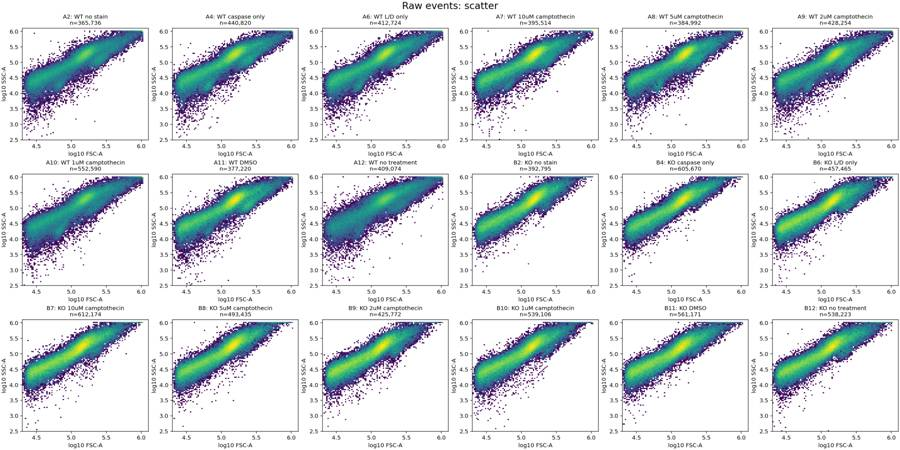
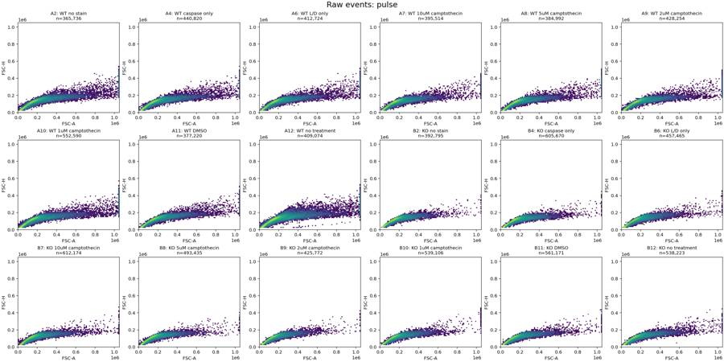
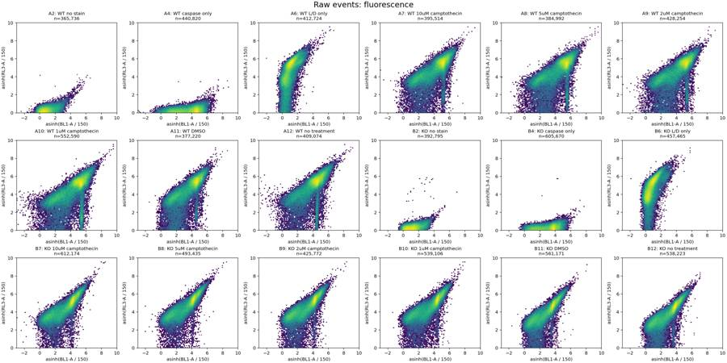
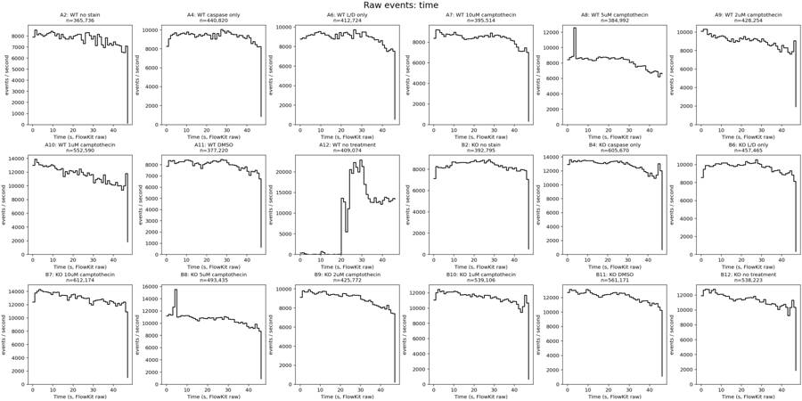
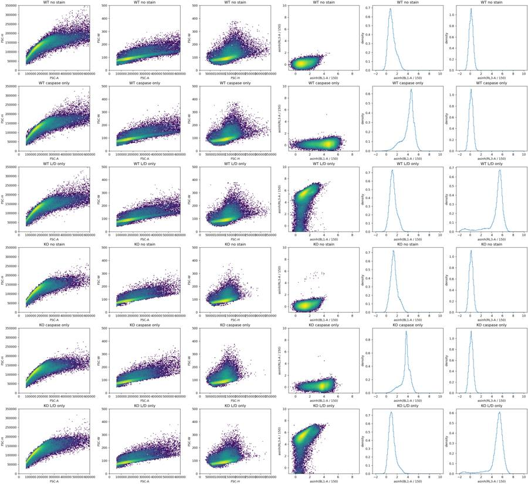
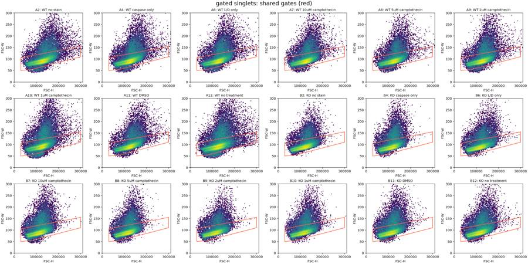
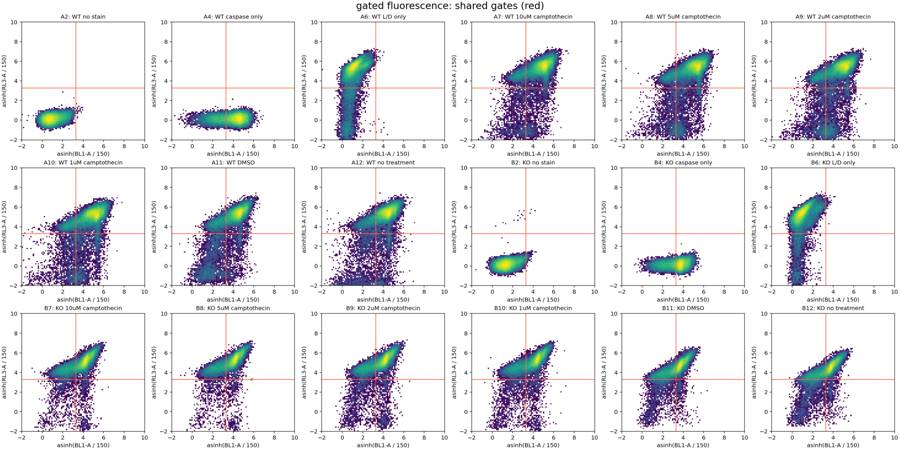
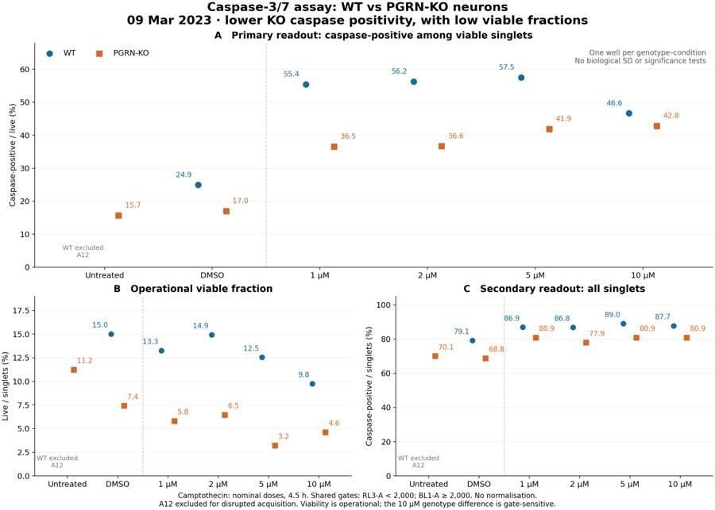
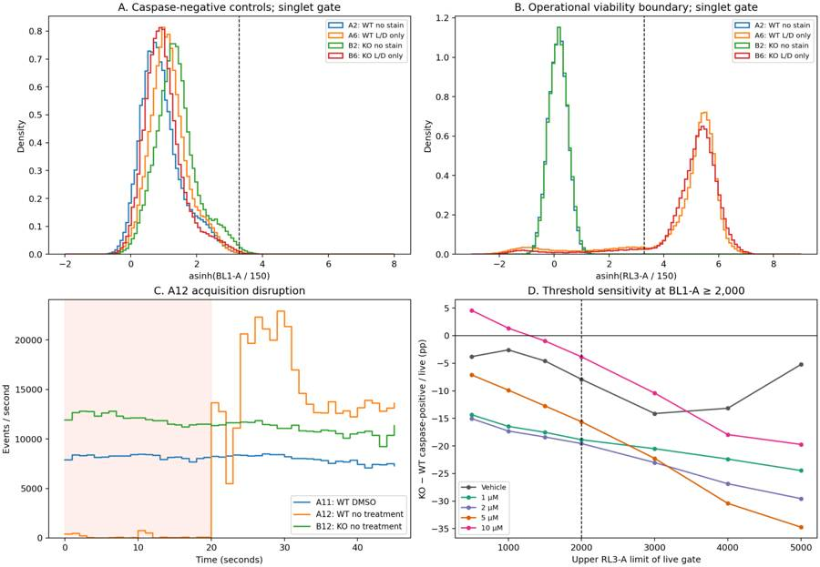
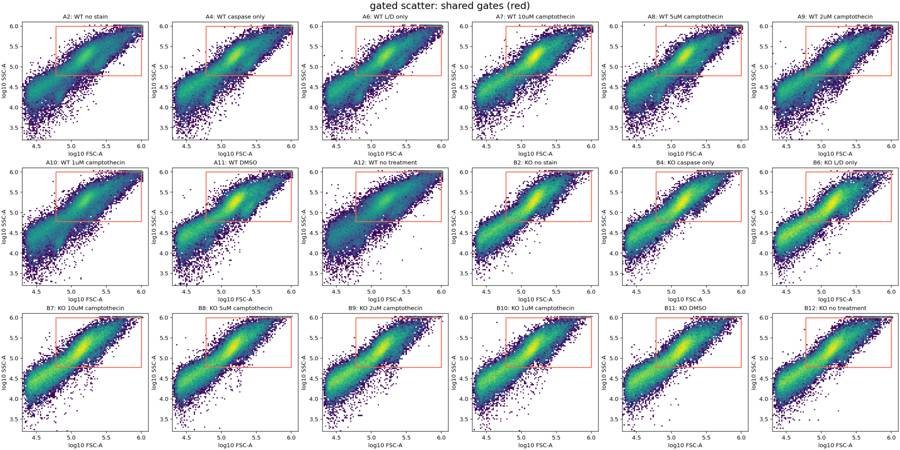

B4_flowkit · GPT-6 Astra · attempt 8QCvDnC
Batch fk1 · job fk1_B_EXP23000279_rep1_230309_flowkit_gpt-6-astra · trial B_EXP23000279_rep1_230309_flowki__8QCvDnC. Long tool outputs are cut at 6,000 characters.
Score
0.41
0.41
Minutes
10.9
10.9
Agent cost
$4.03
$4.03
Steps
23
23
Screenshots / images
10
10
1
task prompt (instruction.md)
<environment_context> <cwd>/task</cwd> <shell>bash</shell> <current_date>2026-11-10</current_date> <timezone>Etc/UTC</timezone> <filesystem><workspace_roots><root>/task</root></workspace_roots><permission_profile type="disabled"><file_system type="unrestricted" /></permission_profile></filesystem> </environment_context>
2
user message
# Caspase-3/7 assay in WT vs PGRN-KO iPSC-derived neurons: plate acquired 09-Mar-2023
You are the analyst for this experiment: analyse the plate, answer the plan's question, and recommend the next step.
## Inputs (read-only)
| Path | Content |
|---|---|
| `/task/inputs/plan.md` | The scientist's notebook plan for this run: background, objective, materials, procedure, plate maps |
| `/task/inputs/plate_layout.csv` | One row per FCS file: `file, well, sample, genotype, treatment`. Values are the scientist's plate-map wording, from the plan's "Run flow" plate map (first row = A, second row = B) |
| `/task/inputs/raw/` | 18 FCS files (Attune NxT, FCS 3.1, acquired 09-Mar-2023) |
## Environment
- **Budget.** About 5 hours.
## Deliverables (all in `/task/outputs/`)
CSV files must be comma-separated, UTF-8, with a header row. Use the exact file names, column names and allowed values below.
### 1. `gates.xml`
- Your gating strategy as GatingML 2.0, written with `flowkit.export_gatingml` (see *Software*). It must load with `flowkit.parse_gating_xml("/task/outputs/gates.xml")`.
- Every population in `counts.csv` except `all_events` must be a gate in this file with exactly the same name.
- Re-applying the saved gates to the raw files must reproduce the counts in `counts.csv`.
### 2. `counts.csv`
Columns, in order: `file, well, population, role, parent, count, pct_of_parent`
- **One row per file × population**, for all 18 files and the same set of populations in every file.
- **The `all_events` row.** Each file has one row with `population` = `all_events`, `role` = `other`, `parent` = `none`, and `pct_of_parent` empty.
- **`role`** ∈ {`cells`, `singlets`, `live`, `marker_positive`, `other`}.
- `cells`: the main cell population on scatter.
- `singlets`: single cells.
- `live`: viable cells.
- `marker_positive`: the population carrying your primary readout.
- `other`: any other population.
- Each of `cells`, `singlets`, `live` and `marker_positive` must be assigned to exactly one population, the same one in every file.
- **`parent`**: the name of the parent population (`all_events` for the first gate).
- **`count`**: integer event count from FlowKit statistics.
- **`pct_of_parent`**: 100 × count / parent count.
### 3. `flags.csv`
Columns: `file, well, issue_type, evidence, decision`
- One row per file, for all 18 files. Flag any well whose data should not be used, with evidence.
- `issue_type` ∈ {`none`, `clog`, `ran_dry`, `too_few_events`, `saturation`, `bad_control`, `mislabel`, `other`}
- `decision` ∈ {`keep`, `keep_with_note`, `exclude`}
- `evidence` is required unless `issue_type` = `none`. It must cite at least one number measured from the data.
### 4. `condition_summary.csv`
Columns: `condition, wells, n_wells_used, mean, sd, metric_definition, normalisation_applied`
- **One row per condition.** You name the conditions. If you report more than one metric, give each condition–metric pair its own row with a unique `condition` name.
- **`wells`**: the plate wells used, separated by `;` (e.g. `A7;A8`).
- **`n_wells_used`**: integer.
- **`mean`**: number. **`sd`**: number, or empty when `n_wells_used` = 1.
- **`metric_definition`**: the metric in terms of your population names (numerator / denominator).
- **`normalisation_applied`**: `none`, or the exact formula you applied.
### 5. `figure.png`
The main result chart.
### 6. `report.md`
These headings, in this order:
1. `## Question`
2. `## Methods`
3. `## Results`
4. `## Conclusion`
5. `## Caveats`
6. `## Recommendation`
### 7. `answer.json`
```
{
"question": "<the question from the plan>",
"comparisons": [
{"comparison": "<name>", "a": "<condition from condition_summary.csv>", "b": "<condition from condition_summary.csv>",
"direction": "increase|decrease|no_clear_change", "magnitude": "<text with number>", "confidence": "high|medium|low"}
],
"overall_answer": "yes: ... | partial: ... | no: ...",
"assay_verdict": "fit_for_purpose|needs_optimisation|not_fit_for_purpose",
"next_action": "<one ACTION>",
"next_change": {"what": str, "from": str, "to": str, "why": str},
"excluded_wells": ["<wells with decision = exclude in flags.csv>"],
"caveats": ["..."]
}
```
Rules for `answer.json`:
- `comparisons` has at least 1 item. `a` and `b` must exactly match `condition` values in `condition_summary.csv`. `direction` describes b relative to a.
- `overall_answer` starts with `yes:`, `partial:` or `no:`.
- ACTION ∈ {`proceed_as_planned`, `repeat_unchanged`, `repeat_with_change`, `optimise_reagent_or_setting`, `change_treatment_or_timing`, `switch_assay`, `stop`}.
- `next_change`: the change you recommend, as an object: `what` (the step, reagent or condition to change), `from` (its value as run), `to` (the value you recommend) and `why`. Use empty strings if you recommend no change.
- `excluded_wells` must equal the set of wells marked `exclude` in `flags.csv`.
## Software (FlowKit version of this task)
- **Python 3 with FlowKit 1.2.3** (plus flowio, numpy, pandas, scipy, matplotlib, openpyxl) is installed. There is no graphical analysis program.
- **Load** each file with `flowkit.Sample(path)`. Build **one** `flowkit.GatingStrategy` for all wells, with `flowkit.Dimension` and `flowkit.gates.RectangleGate`, `PolygonGate` or `EllipsoidGate` (no quadrant or Boolean gates).
- **Gate names** must be valid XML IDs: letters, digits and underscores, starting with a letter (no spaces or `+`).
- **One gate per reported population**, named exactly as the population and nested under its parent population (the first population's gate sits at the root). A population's events are its own gate within its parent.
- **Compensation.** Your choice. Every gate dimension must state its `compensation_ref` (`"uncompensated"`, `"FCS"` for the file's own spillover matrix, or the id of a matrix you add to the strategy).
- **Channels.** FlowKit gate dimensions use the detector ID (`$PnN`, e.g. `BL1-A`), not the text label.
- **Transforms.** You may draw gates on transformed axes (for example `flowkit.transforms.LogicleTransform`, added with `add_transform` and referenced by `transformation_ref`).
- **Save** the strategy with `flowkit.export_gatingml(strategy, open("/task/outputs/gates.xml", "wb"))` and check that it reloads with `flowkit.parse_gating_xml`.
- **Counts.** `counts.csv` must be the counts these saved gates give on each file (`strategy.gate_sample(sample)`), with no per-well changes.
- **Looking at data.** Save plots as PNG files and open the image files to view them.
---
## How you work
You work in a **terminal** (bash, working directory `/task`).
- **Inputs** are in `/task/inputs/` (read-only). **Write every deliverable to `/task/outputs/`.** Only that folder is collected for grading.
- **Limits.** There is no limit on the number of actions; the only limit is the time budget above. Save `gates.xml` and your output files early and often.
3
agent
I’ll read the plan and inspect the acquisition data, then build one gating strategy for all 18 wells. I’ll check the controls and acquisition quality before interpreting the WT–PGRN-KO comparison.
tool call · exec
const results = await Promise.allSettled([
tools.exec_command({cmd:"pwd && rg --files -g 'AGENTS.md' -g '!inputs/raw/**' -g '!outputs/**' /task",max_output_tokens:3000}),
tools.exec_command({cmd:"cat /task/inputs/plan.md",max_output_tokens:14000}),
tools.exec_command({cmd:"cat /task/inputs/plate_layout.csv && ls -lh /task/inputs/raw",max_output_tokens:5000})
]); results.forEach((r,i)=>text({i,result:r}));
text(ALL_TOOLS.filter(x=>/search|browse/i.test(x.name+" "+x.description)).map(x=>({name:x.name,description:x.description.slice(0,100)})).slice(0,50));
tool output
Script completed
Wall time 0.1 seconds
Output:
{"i":0,"result":{"status":"fulfilled","value":{"chunk_id":"a38399","wall_time_seconds":0.00000365,"exit_code":1,"original_token_count":2,"output":"/task\n"}}}
{"i":1,"result":{"status":"fulfilled","value":{"chunk_id":"a6350c","wall_time_seconds":0.00000329,"exit_code":0,"original_token_count":817,"output":"# EXP23000279 | Caspase Assay in WT and PGRNKO iPSC Derived Neurons\n\nNotebook plan for the run acquired on 2023-03-09. This is the scientist's text as written, up to the start of this run's results.\n\n## DAY 2023-03-09\n\n### Background:\nLoss of function of PGRN has been shown to negatively impact neural cell health reflected by increased cell death and caspase activity.\nCaspases are important mediators of the cell death pathway (apoptosis). Caspases are a group of proteases that result in cleavage of protein substrates subsequently leading to cell disassembly. For the PGRN RNAswap program we will want to measure caspase activity in iPSC derived neurons before and after adding the PGRN RNAswap constructs to ensure that PGRN protein replacement is rescuing the health of neurons. Before testing if AAV-PGRN constructs help restore neural health I will test and optimize the assay on the neurons with no AAV.\n\n### Objective:\nFor first round of experiments will be optimizing the assay. The goal will be to determine if a difference in caspase activity is present in PGRNKOs compared to WT PGP1 neurons. Camptothsesin (topoisomerase inhibitor) will be added.\n\n### Materials:\n- Camptothecin\n- CellEvent Caspase 3/7 reagent\n- DMSO\n- Zombie NIR\n\n### Procedure:\n- Differentiate WT and PGRNKO iPSC into neurons\n- Once cells are sufficiently neuronal can run caspase assay.\n- Add camptothecin Follow plate maps below.\n\n| Dose | for 1 well |\n|---|---|\n| 10uM | 20uL of 250uM stock into 500uL media |\n| 5uM | 10uL of 250uM stock into 500uL media |\n| 2uM | 4uL of 250uM stock into 500uL media |\n| 1uM | 2uL of 250uM stock into 500uL media |\n| DMSO (no treatment controls) | 10uL into 500uL media |\n\n- Incubate with camptothecin for 4.5hrs\n\nWT plate map (as written):\n```\nWT DMSO | WT 5uM camptothecin | WT caspase stain only\nWT no treatment | WT 10uM camptothecin | WT caspase stain only\nWT 1uM camptothecin | WT no stain | WT L/D only\nWT 2uM camptothecin | WT no stain | WT L/D only\n```\n\nKO plate map (as written):\n```\nKO DMSO | KO 5uM camptothecin | KO caspase only\nKO no treatment | KO 10uM camptothecin | KO caspase only\nKO 1uM camptothecin | KO no stain | KO L/D only\nKO 2uM camptothecin | KO no stain | KO L/D only\n```\n\n5. Run flow\n\nFlow plate map (as written; the remaining rows of the table are empty):\n```\nWT no stain | WT no stain | WT caspase only | WT caspase only | WT L/D only | WT L/D only | WT 10uM camptothecin | WT 5uM camptothecin | WT 2uM camptothecin | WT 1uM camptothecin | WT DMSO | WT no treatment\nKO no stain | KO no stain | KO caspase only | KO caspase only | KO L/D only | KO L/D only | KO 10uM camptothecin | KO 5uM camptothecin | KO 2uM camptothecin | KO 1uM camptothecin | KO DMSO | KO no treatment\n```\n\n3. Run CellEvent flow assay\n- Aspirate media and wash with PBS\n- Add 150uL accutase incubate for 5-10min\n- Add 75uL FBS and collect into 96w round bottom plate\n- spin down 200xg for 5min\n- Add 200uL Zombie NIR at 1:500 (4mL PBS+ 8uL Zombie) Incubate for 10min\n- Spin down and remove Zombie stain\n- Add 200uL of Cell Event Caspase 3/7 Detection reagent (1:1000) in flow staining buffer. Incubate for 30min at 37C (4mL +4uL reagent)\n- Analyze the samples without fixing.\n"}}}
{"i":2,"result":{"status":"fulfilled","value":{"chunk_id":"23e90c","wall_time_seconds":0.00000343,"exit_code":0,"original_token_count":787,"output":"file,well,sample,genotype,treatment\nCaspase_WT_KO_optimization_caspase_Group_A2.fcs,A2,WT no stain,WT,no stain\nCaspase_WT_KO_optimization_caspase_Group_A4.fcs,A4,WT caspase only,WT,caspase only\nCaspase_WT_KO_optimization_caspase_Group_A6.fcs,A6,WT L/D only,WT,L/D only\nCaspase_WT_KO_optimization_caspase_Group_A7.fcs,A7,WT 10uM camptothecin,WT,10uM camptothecin\nCaspase_WT_KO_optimization_caspase_Group_A8.fcs,A8,WT 5uM camptothecin,WT,5uM camptothecin\nCaspase_WT_KO_optimization_caspase_Group_A9.fcs,A9,WT 2uM camptothecin,WT,2uM camptothecin\nCaspase_WT_KO_optimization_caspase_Group_A10.fcs,A10,WT 1uM camptothecin,WT,1uM camptothecin\nCaspase_WT_KO_optimization_caspase_Group_A11.fcs,A11,WT DMSO,WT,DMSO\nCaspase_WT_KO_optimization_caspase_Group_A12.fcs,A12,WT no treatment,WT,no treatment\nCaspase_WT_KO_optimization_caspase_Group_B2.fcs,B2,KO no stain,KO,no stain\nCaspase_WT_KO_optimization_caspase_Group_B4.fcs,B4,KO caspase only,KO,caspase only\nCaspase_WT_KO_optimization_caspase_Group_B6.fcs,B6,KO L/D only,KO,L/D only\nCaspase_WT_KO_optimization_caspase_Group_B7.fcs,B7,KO 10uM camptothecin,KO,10uM camptothecin\nCaspase_WT_KO_optimization_caspase_Group_B8.fcs,B8,KO 5uM camptothecin,KO,5uM camptothecin\nCaspase_WT_KO_optimization_caspase_Group_B9.fcs,B9,KO 2uM camptothecin,KO,2uM camptothecin\nCaspase_WT_KO_optimization_caspase_Group_B10.fcs,B10,KO 1uM camptothecin,KO,1uM camptothecin\nCaspase_WT_KO_optimization_caspase_Group_B11.fcs,B11,KO DMSO,KO,DMSO\nCaspase_WT_KO_optimization_caspase_Group_B12.fcs,B12,KO no treatment,KO,no treatment\ntotal 289M\n-r--r--r-- 1 root root 19M Nov 10 16:58 Caspase_WT_KO_optimization_caspase_Group_A10.fcs\n-r--r--r-- 1 root root 13M Nov 10 16:58 Caspase_WT_KO_optimization_caspase_Group_A11.fcs\n-r--r--r-- 1 root root 15M Nov 10 16:58 Caspase_WT_KO_optimization_caspase_Group_A12.fcs\n-r--r--r-- 1 root root 13M Nov 10 16:58 Caspase_WT_KO_optimization_caspase_Group_A2.fcs\n-r--r--r-- 1 root root 16M Nov 10 16:58 Caspase_WT_KO_optimization_caspase_Group_A4.fcs\n-r--r--r-- 1 root root 15M Nov 10 16:58 Caspase_WT_KO_optimization_caspase_Group_A6.fcs\n-r--r--r-- 1 root root 14M Nov 10 16:58 C
… [1,483 more characters not shown]tool call · exec
const res = await Promise.allSettled([
tools.exec_command({cmd:"for f in /AGENTS.md /task/AGENTS.md /task/inputs/AGENTS.md; do if [ -f \"$f\" ]; then cat \"$f\"; fi; done",max_output_tokens:5000}),
tools.exec_command({cmd:"mkdir -p /task/outputs && python - <<'PY'\nimport flowkit as fk, inspect, importlib.metadata\nprint('flowkit',importlib.metadata.version('flowkit'))\nfor obj in [fk.Sample,fk.Dimension,fk.GatingStrategy.add_gate,fk.GatingStrategy.gate_sample,fk.gates.PolygonGate,fk.gates.RectangleGate,fk.transforms.LogicleTransform]:\n print(obj,inspect.signature(obj))\ns=fk.Sample('/task/inputs/raw/Caspase_WT_KO_optimization_caspase_Group_A2.fcs')\nprint('events',s.event_count)\nprint(s.channels.to_string())\nprint(s.metadata)\nprint('event source signature',inspect.signature(s.get_events))\nprint('gate methods', [x for x in dir(fk.GatingResults) if not x.startswith('_')] if hasattr(fk,'GatingResults') else 'internal')\nPY","max_output_tokens":10000})
]); res.forEach((r,i)=>text({i,result:r}));
text(await tools.web__run({search_query:[{q:"site.thermofisher.com CellEvent Caspase-3/7 Green flow cytometry 500 nM 1 μM protocol"},{"q":"site.biolegend.com Zombie NIR excitation emission 780 viability flow cytometry"}],response_length:"long"}));
tool output
Script completed
Wall time 2.7 seconds
Output:
{"i":0,"result":{"status":"fulfilled","value":{"chunk_id":"78e6b4","wall_time_seconds":0.00000274,"exit_code":0,"original_token_count":0,"output":""}}}
{"i":1,"result":{"status":"fulfilled","value":{"chunk_id":"97ccd9","wall_time_seconds":1.639768133,"exit_code":0,"original_token_count":1108,"output":"flowkit 1.2.3\n<class 'flowkit._models.sample.Sample'> (fcs_path_or_data, sample_id=None, filename_as_id=False, channel_labels=None, compensation=None, null_channel_list=None, ignore_offset_error=False, ignore_offset_discrepancy=False, use_header_offsets=False, cache_original_events=False, subsample=10000)\n<class 'flowkit._models.dimension.Dimension'> (dimension_id, compensation_ref='uncompensated', transformation_ref=None, range_min=None, range_max=None)\n<function GatingStrategy.add_gate at 0x7f0e93e254e0> (self, gate, gate_path, sample_id=None)\n<function GatingStrategy.gate_sample at 0x7f0e93e26660> (self, sample, cache_events=False, verbose=False)\n<class 'flowkit._models.gates._gates.PolygonGate'> (gate_name, dimensions, vertices, use_complement=False)\n<class 'flowkit._models.gates._gates.RectangleGate'> (gate_name, dimensions, use_complement=False)\n<class 'flowkit._models.transforms._transforms.LogicleTransform'> (param_t, param_w, param_m, param_a)\nevents 365736\n channel_number pnn pns png pne pnr\n0 1 Time Time 1.0 (0.0, 0.0) 67108864.0\n1 2 FSC-A FSC-A 1.0 (0.0, 0.0) 1048576.0\n2 3 SSC-A SSC-A 1.0 (0.0, 0.0) 1048576.0\n3 4 BL1-A AAV-GFP-Caspase-A 1.0 (0.0, 0.0) 1048576.0\n4 5 RL3-A LiveDead-Zombie NIR-A 1.0 (0.0, 0.0) 1048576.0\n5 6 FSC-H FSC-H 1.0 (0.0, 0.0) 1048576.0\n6 7 SSC-H SSC-H 1.0 (0.0, 0.0) 1048576.0\n7 8 FSC-W FSC-W 1.0 (0.0, 0.0) 1024.0\n8 9 SSC-W SSC-W 1.0 (0.0, 0.0) 1024.0\n{'par': '9', 'tot': '365736', 'mode': 'L', 'datatype': 'F', 'byteord': '1,2,3,4', 'p1f': 'NA', 'p1l': 'NA', 'p1s': 'Time', 'p1v': 'NA', 'p1n': 'Time', 'p1b': '32', 'p1r': '67108864', 'p1e': '0,0', 'p2f': 'NA', 'p2l': '488', 'p2s': 'FSC-A', 'p2v': '30', 'p2n': 'FSC-A', 'p2b': '32', 'p2r': '1048576', 'p2e': '0,0', 'p3f': 'NA', 'p3l': '488', 'p3s': 'SSC-A', 'p3v': '300', 'p3n': 'SSC-A', 'p3b': '32', 'p3r': '1048576', 'p3e': '0,0', 'p4f': 'NA', 'p4l': '488', 'p4s': 'AAV-GFP-Caspase-A', 'p4v': '250', 'p4n': 'BL1-A', 'p4b': '32', 'p4r': '1048576', 'p4e': '0,0', 'p5f': 'NA', 'p5l': '640', 'p5s': 'LiveDead-Zombie NIR-A', 'p5v': '300', 'p5n': 'RL3-A', 'p5b': '32', 'p5r': '1048576', 'p5e': '0,0', 'p6f': 'NA', 'p6l': '488', 'p6s': 'FSC-H', 'p6v': '30', 'p6n': 'FSC-H', 'p6b': '32', 'p6r': '1048576', 'p6e': '0,0', 'p7f': 'NA', 'p7l': '488', 'p7s': 'SSC-H', 'p7v': '300', 'p7n': 'SSC-H', 'p7b': '32', 'p7r': '1048576', 'p7e': '0,0', 'p8f': 'NA', 'p8l': '488', 'p8s': 'FSC-W', 'p8v': '30', 'p8n': 'FSC-W', 'p8b': '32', 'p8r': '1024', 'p8e': '0,0', 'p9f': 'NA', 'p9l': '488', 'p9s': 'SSC-W', 'p9v': '300', 'p9n': 'SSC-W', 'p9b': '32', 'p9r': '1024', 'p9e': '0,0', 'cyt': '0A29009 Attune NxT Acoustic Focusing Cytometer (Lasers: BRV6Y)', 'sys': 'SEA11065ATTUNE Microsoft Windows 10 Enterprise LTSC', 'spillover': '2,BL1-A,RL3-A,1.000000,0.000000,0.000000,1.000000', 'btim': '15:13:25', 'cells': 'NA', 'com': 'NA', 'cytsn': '2AFC228071019', 'date': '09-Mar-2023', 'etim': '15:14:13', 'exp': 'NA', 'fil': 'A2.fcs', 'inst': 'NA', 'originality': 'Original', 'lost': '0', 'op': 'Jeff Huang', 'plateid': 'NA', 'platename': 'Caspase_WT_KO_optimization', 'proj': 'caspase', 'smno': 'Group', 'src': 'NA', 'timestep': '0.001', 'vol': '157000', 'wellid': 'A2', '#coincidentcount': '32822', '#flowrate': '200', '#laser1asf': '1.05', '#laser1color': 'Blue', '#laser1delay': '1100', '#laser2asf': '1.09', '#laser2color': 'Red', '#laser2delay': '1497', '#laser3asf': '0.89', '#laser3color': 'Violet', '#laser3delay': '717', '#laser4asf': '0.99', '#laser4color': 'Yellow', '#laser4delay': '304', '#laserconfig': 'BRV6Y', '#p1label': 'NA', '#p1target': 'NA', '#p4label': 'Caspase', '#p4target': 'AAV-GFP', '#p5label': 'Zombie NIR', '#p5target': 'LiveDead', '#ptdate': '09-Mar-2023', '#ptresult': 'Pass', '#tr1': 'OR_FSC,25000', '#widththreshold': '1000', '#winext': '0', 'hostid': 'SEA11065ATTUNE', 'begindata': '000000008192', 'enddata': '000013174687', 'nextdata': '000000000000', 'beginstext': '000000000000', 'endstext': '000000000000', 'beginanalysis': '000000000000', 'endanalysis': '000000000000'}\nevent source signature (source='xform', subsample=False, event_mask=None)\ngate methods internal\n"}}}
CellEvent Caspase-3/7 Green Flow Cytometry Assay Kit User Guide (Pub.No. MAN0007522 B.0) (https://documents.thermofisher.com/TFS-Assets/LSG/manuals/cellevent_caspase_3_7_grn_flow_cytometry_assay_kit_man.pdf)
citeturn0search12 [wordlim: 200] Published: 4.3 years ago; **Stain cells with CellEvent™ Caspase-3/7 Green Flow Cytometry Assay Kit (continued)** ... ** Add 1 µL of CellEvent™ Caspase-3/7 Green Detection Reagent to 1 mL of sample and mix gently. ... The final concentration of the reagent is 500 nM.
1. **Stain cells with CellEvent™ Caspase-3/7 Green Flow Cytometry Assay Kit (continued)**
**1.1.** *(Optional)* Induce apoptosis in cells using the desired method. Prepare a negative control by incubating cells in the absence of apoptosis inducing agent.
**1.2.** Harvest the cell sample(s). Adjust the cell concentration of the sample(s) between 1 × 10^5 cells/mL and 1 × 10^7 cells/mL using the appropriate buffer such as 1X PBS (Cat. No. 10010) ± 2% BSA, or complete growth medium (e.g., RPMI, Cat. No. 22400; DMEM, Cat. No. 11995).
**1.3.** Before using the SYTOX™ AADvanced™ Dead Cell Stain for the first time, prepare a 1 mM solution.
a. Remove the vial cont
… [28,250 more characters not shown]5
agent
The run contains one well per genotype and treatment, plus unstained and single-stain controls. Any WT–KO difference will therefore be descriptive. The FCS labels identify BL1-A as the caspase channel and RL3-A as Zombie NIR; I’m checking their separation and whether acquisition problems affect any wells.
tool call · exec
text(await tools.apply_patch("*** Begin Patch\n*** Add File: /task/outputs/explore.py\n+from pathlib import Path\n+import json\n+import numpy as np\n+import pandas as pd\n+import matplotlib\n+matplotlib.use('Agg')\n+import matplotlib.pyplot as plt\n+from matplotlib.colors import LogNorm\n+import flowkit as fk\n+\n+ROOT = Path('/task')\n+OUT = ROOT / 'outputs'\n+layout = pd.read_csv(ROOT / 'inputs/plate_layout.csv')\n+figs = {}\n+for name in ['scatter','pulse','fluorescence','time']:\n+ figs[name] = plt.subplots(3,6,figsize=(22,11),constrained_layout=True)\n+rng = np.random.default_rng(20230309)\n+metrics=[]\n+metadata={}\n+for k,r in layout.iterrows():\n+ s=fk.Sample(str(ROOT/'inputs/raw'/r.file))\n+ e=s.get_events(source='raw')\n+ ch=list(s.channels.pnn)\n+ ci={n:ch.index(n) for n in ch}\n+ metadata[r.well]=s.metadata\n+ z=e[rng.choice(len(e),min(45000,len(e)),replace=False)]\n+ d={c:z[:,ci[c]] for c in ch}\n+ a=figs['scatter'][1].flat[k]\n+ a.hist2d(np.log10(np.maximum(d['FSC-A'],1)),np.log10(np.maximum(d['SSC-A'],1)),bins=100,range=[[4.3,6.1],[2.5,6.1]],norm=LogNorm(),cmap='viridis')\n+ a.set(xlabel='log10 FSC-A',ylabel='log10 SSC-A')\n+ a=figs['pulse'][1].flat[k]\n+ a.hist2d(d['FSC-A'],d['FSC-H'],bins=100,range=[[0,1050000],[0,1050000]],norm=LogNorm(),cmap='viridis')\n+ a.set(xlabel='FSC-A',ylabel='FSC-H')\n+ a.ticklabel_format(style='sci',axis='both',scilimits=(0,0))\n+ a=figs['fluorescence'][1].flat[k]\n+ a.hist2d(np.arcsinh(d['BL1-A']/150),np.arcsinh(d['RL3-A']/150),bins=100,range=[[-3,10],[0,10]],norm=LogNorm(),cmap='viridis')\n+ a.set(xlabel='asinh(BL1-A / 150)',ylabel='asinh(RL3-A / 150)')\n+ a=figs['time'][1].flat[k]\n+ t=e[:,ci['Time']]\n+ edges=np.arange(np.floor(t.min()),np.ceil(t.max())+1,1.)\n+ cnt,edges=np.histogram(t,bins=edges)\n+ a.step(edges[:-1],cnt,where='post',color='black')\n+ a.set(xlabel='Time (s, FlowKit raw)',ylabel='events / second',ylim=(0,None))\n+ for name in figs:\n+ figs[name][1].flat[k].set_title(f'{r.well}: {r[\"sample\"]}\\nn={len(e):,}',fontsize=10)\n+ row={'file':r.file,'well':r.well,'sample':r['sample'],'events':len(e),'time_min':t.min(),'time_max':t.max(),'duration_s':t.max()-t.min(),'max_time_gap_s':np.diff(t).max(),'rate_median_1s':np.median(cnt[1:-1]),'rate_min_1s':cnt[1:-1].min(),'rate_max_1s':cnt[1:-1].max(),'rate_first5s':np.mean(cnt[:5]),'rate_last5s':np.mean(cnt[-5:]),'coincident_metadata':s.metadata.get('#coincidentcount'), 'volume_metadata':s.metadata.get('vol')}\n+ for c in ch[1:]:\n+ v=e[:,ci[c]]\n+ for q in [0,.01,.1,.25,.5,.75,.9,.99,1]:\n+ row[c+'_q'+str(q)]=np.quantile(v,q)\n+ row[c+'_pct_ge_range']=100*np.mean(v>=float(s.channels.loc[ci[c],'pnr'])-1)\n+ row[c+'_pct_at_max']=100*np.mean(v==v.max())\n+ metrics.append(row)\n+ print(r.well, len(e), 'time', t.min(), t.max(), 'rate', np.median(cnt[1:-1]), flush=True)\n+pd.DataFrame(metrics).to_csv(OUT/'raw_qc.csv',index=False)\n+(OUT/'fcs_metadata.json').write_text(json.dumps(metadata,indent=2))\n+for name,(fig,axs) in figs.items():\n+ fig.suptitle('Raw events: '+name,fontsize=17)\n+ fig.savefig(OUT/f'exploration_{name}.png',dpi=145)\n+ plt.close(fig)\n*** End Patch"));
text(await tools.exec_command({cmd:"python /task/outputs/explore.py",yield_time_ms:1000,max_output_tokens:3000}));
tool output
Script completed
Wall time 1.2 seconds
Output:
{}
{"chunk_id":"a798f5","wall_time_seconds":1.000818707,"session_id":86075,"original_token_count":0,"output":""}tool call · exec
const r = await Promise.allSettled([
tools.exec_command({cmd:"python - <<'PY'\nimport inspect\nfrom flowkit._models.gating_results import GatingResults\nimport flowkit as fk\nprint(inspect.getsource(GatingResults))\nprint(inspect.getsource(fk.Sample._process_time_channel))\nprint(inspect.getsource(fk.transforms.LogTransform))\nPY","max_output_tokens":12000}),
tools.write_stdin({session_id:86075,chars:"",yield_time_ms:1000,max_output_tokens:3000})
]); r.forEach((v,i)=>text({i,result:v}));
tool output
Script completed
Wall time 5.0 seconds
Output:
{"i":0,"result":{"status":"fulfilled","value":{"chunk_id":"f7cc89","wall_time_seconds":0.766145509,"exit_code":1,"original_token_count":1630,"output":"Traceback (most recent call last):\n File \"<stdin>\", line 5, in <module>\nAttributeError: type object 'Sample' has no attribute '_process_time_channel'\nclass GatingResults(object):\n \"\"\"\n A GatingResults instance is returned from the GatingStrategy `gate_samples` method\n as well as the Session `get_gating_results` method. End users will never create an\n instance of GatingResults directly, only via these GatingStrategy and Session\n methods. However, there are several GatingResults methods to retrieve the results.\n \"\"\"\n def __init__(self, results_dict, sample_id):\n self._raw_results = results_dict\n self._gate_lut = {}\n self.report = None\n self.sample_id = sample_id\n self._process_results()\n\n @staticmethod\n def _get_pd_result_dict(res_dict, gate_name):\n return {\n 'sample': res_dict['sample'],\n 'gate_path': res_dict['gate_path'],\n 'parent': res_dict['parent'],\n 'gate_name': gate_name,\n 'gate_type': res_dict['gate_type'],\n 'count': res_dict['count'],\n 'absolute_percent': res_dict['absolute_percent'],\n 'relative_percent': res_dict['relative_percent'],\n 'quadrant_parent': None\n }\n\n def _process_results(self):\n pd_list = []\n\n for (g_name, g_path), res in self._raw_results.items():\n if 'events' not in res:\n # it's a quad gate with sub-gates\n for sub_g_id, sub_res in res.items():\n pd_dict = self._get_pd_result_dict(sub_res, sub_g_id)\n pd_dict['quadrant_parent'] = g_name\n pd_list.append(pd_dict)\n if sub_g_id not in self._gate_lut:\n self._gate_lut[sub_g_id] = {\n 'paths': [g_path]\n }\n else:\n self._gate_lut[sub_g_id]['paths'].append(g_path)\n else:\n pd_list.append(self._get_pd_result_dict(res, g_name))\n if g_name not in self._gate_lut:\n self._gate_lut[g_name] = {\n 'paths': [g_path]\n }\n else:\n self._gate_lut[g_name]['paths'].append(g_path)\n\n df = pd.DataFrame(\n pd_list,\n columns=[\n 'sample',\n 'gate_path',\n 'gate_name',\n 'gate_type',\n 'quadrant_parent',\n 'parent',\n 'count',\n 'absolute_percent',\n 'relative_percent'\n ]\n )\n df['level'] = df.gate_path.map(lambda x: len(x) - 1)\n\n self.report = df.sort_values(['sample', 'level', 'gate_name'])\n\n def _filter_gate_report(self, gate_name, gate_path=None):\n results = self.report[(self.report['sample'] == self.sample_id) & (self.report['gate_name'] == gate_name)]\n\n if gate_path is not None:\n results = results[results.gate_path == gate_path]\n elif len(results) > 1:\n raise ValueError(\"Gate name %s is ambiguous, specify the full gate path\")\n\n return results\n\n def get_gate_membership(self, gate_name, gate_path=None):\n \"\"\"\n Retrieve a boolean array indicating gate membership for the events in the GatingResults sample.\n Note, the same gate ID may be found in multiple gate paths, i.e. the gate ID can be ambiguous.\n In this case, specify the full gate path to retrieve gate indices.\n\n :param gate_name: text string of a gate name\n :param gate_path: A tuple of ancestor gate IDs for the given gate ID. Alternatively, a string path delimited\n by forward slashes can also be given, e.g. ('/root/singlets/lymph/live')\n :return: NumPy boolean array (length of sample event count)\n \"\"\"\n gate_paths = self._gate_lut[gate_name]['paths']\n if len(gate_paths) > 1:\n if gate_path is None:\n raise ValueError(\"Gate name %s is ambiguous, specify the full gate path\")\n elif isinstance(gate_path, tuple):\n gate_path = \"/\".join(gate_path)\n else:\n gate_path = gate_paths[0]\n\n # need to check for quadrant gates, as they need to be handled differently\n gate_data = self.report[(self.report['sample'] == self.sample_id) & (self.report.gate_name == gate_name)]\n quad_parent_values = set(gate_data.quadrant_parent.to_list())\n\n if len(quad_parent_values) == 1 and None in quad_parent_values:\n # it's not a quadrant gate\n return self._raw_results[gate_name, gate_path]['events']\n elif len(quad_parent_values) == 1:\n quad_parent = quad_parent_values.pop()\n return self._raw_results[quad_parent, gate_path][gate_name]['events']\n else:\n raise ValueError(\"Report as bug: The gate %s appears to have multiple quadrant parents.\" % gate_name)\n\n def get_gate_count(self, gate_name, gate_path=None):\n \"\"\"\n Retrieve event count for the specified gate ID for the gating results sample\n\n :param gate_name: text string of a gate name\n :param gate_path: tuple of ancestor gate names\n :return: integer count of events in gate ID\n \"\"\"\n results = self._filter_gate_report(gate_name, gate_path=gate_path)\n\n return results['count'].values[0]\n\n def get_gate_absolute_percent(self, gate_name, gate_path=None):\n \"\"\"\n Retrieve percent of events, relative to the total sample events, of the s
… [1,765 more characters not shown]tool call · exec
text(await tools.write_stdin({session_id:86075,chars:"",yield_time_ms:1000,max_output_tokens:2000}));
text(await tools.exec_command({cmd:"ls -lh /task/outputs && python - <<'PY'\nimport pandas as pd\nq=pd.read_csv('/task/outputs/raw_qc.csv')\nprint(q[['well','events','time_max','max_time_gap_s','rate_median_1s','rate_min_1s','rate_first5s','rate_last5s','FSC-A_pct_ge_range','SSC-A_pct_ge_range','BL1-A_pct_ge_range','RL3-A_pct_ge_range']].round(3).to_string(index=False))\nPY",max_output_tokens:4000}));
tool output
Script completed
Wall time 2.9 seconds
Output:
{"chunk_id":"71b8e6","wall_time_seconds":2.66611824,"exit_code":0,"original_token_count":21,"output":"B11 561171 time 0.014 46.098 rate 12408.0\nB12 538223 time 0.014 47.205 rate 11429.0\n"}
{"chunk_id":"22565d","wall_time_seconds":0.108659855,"exit_code":0,"original_token_count":940,"output":"total 1.3M\n-rw-r--r-- 1 root root 311K Nov 10 17:09 exploration_fluorescence.png\n-rw-r--r-- 1 root root 218K Nov 10 17:09 exploration_pulse.png\n-rw-r--r-- 1 root root 364K Nov 10 17:09 exploration_scatter.png\n-rw-r--r-- 1 root root 318K Nov 10 17:09 exploration_time.png\n-rw-r--r-- 1 root root 3.0K Nov 10 17:09 explore.py\n-rw-r--r-- 1 root root 56K Nov 10 17:09 fcs_metadata.json\n-rw-r--r-- 1 root root 20K Nov 10 17:09 raw_qc.csv\nwell events time_max max_time_gap_s rate_median_1s rate_min_1s rate_first5s rate_last5s FSC-A_pct_ge_range SSC-A_pct_ge_range BL1-A_pct_ge_range RL3-A_pct_ge_range\n A2 365736 47.015 0.056 7952.5 6514 8194.2 5485.4 1.269 1.602 0.000 0.000\n A4 440820 47.094 0.052 9495.5 8227 9210.6 6916.4 0.693 0.964 0.000 0.000\n A6 412724 46.075 0.020 9118.0 7515 8970.6 6207.0 0.775 1.145 0.000 0.002\n A7 395514 47.051 0.016 8537.0 7026 8900.2 5820.6 0.339 0.587 0.000 0.000\n A8 384992 46.891 0.016 8503.0 6222 9446.6 6676.8 0.489 0.798 0.001 0.001\n A9 428254 47.195 0.018 9107.0 7638 10068.8 6876.8 0.597 0.870 0.000 0.002\n A10 552590 47.171 0.037 11790.5 9391 13287.4 8615.0 1.266 1.784 0.005 0.001\n A11 377220 47.085 0.013 8140.5 6752 8216.6 5910.0 0.352 0.595 0.000 0.000\n A12 409074 46.926 1.745 12583.0 0 217.0 13306.6 1.423 2.026 0.000 0.001\n B2 392795 47.077 0.006 8382.5 7065 7966.2 6278.2 0.039 0.449 0.000 0.000\n B4 605670 47.088 0.004 13170.5 10957 13327.2 9617.6 0.044 0.544 0.000 0.000\n B6 457465 47.039 0.006 9902.5 8155 9540.6 7158.0 0.091 0.432 0.000 0.001\n B7 612174 47.100 0.014 13009.5 10935 13719.6 9720.0 0.102 0.614 0.000 0.005\n B8 493435 46.105 0.016 10804.0 8693 12438.8 7568.2 0.089 0.676 0.000 0.004\n B9 425772 47.033 0.006 9334.0 7427 9650.2 6255.2 0.061 0.351 0.000 0.002\n B10 539106 47.060 0.008 11644.5 9447 11991.2 8544.4 0.080 0.528 0.000 0.001\n B11 561171 46.098 0.005 12408.0 10236 12926.0 8875.6 0.094 0.553 0.000 0.000\n B12 538223 47.205 0.014 11429.0 9237 12476.2 8630.8 0.135 0.751 0.000 0.000\n"}tool call · exec
for(const file of ["exploration_scatter.png","exploration_pulse.png","exploration_fluorescence.png","exploration_time.png"]){image((await tools.view_image({path:"/task/outputs/"+file})).image_url);}
tool output
Script completed Wall time 0.1 seconds Output:




tool call · exec
text(await tools.exec_command({cmd:"python - <<'PY'\nimport pandas as pd, inspect, flowkit as fk\nq=pd.read_csv('/task/outputs/raw_qc.csv')\nprint(q[['well','FSC-W_q0.1','FSC-W_q0.5','FSC-W_q0.9','FSC-H_q0.5','FSC-A_q0.5','BL1-A_q0.5','RL3-A_q0.5','RL3-A_q0.99']].round(1).to_string(index=False))\nprint(inspect.signature(fk.transforms.AsinhTransform))\nprint(inspect.getsource(fk.transforms.AsinhTransform))\nPY","max_output_tokens":5000}));
text(await tools.apply_patch("*** Begin Patch\n*** Add File: /task/outputs/inspect_controls.py\n+from pathlib import Path\n+import numpy as np\n+import pandas as pd\n+import matplotlib\n+matplotlib.use('Agg')\n+import matplotlib.pyplot as plt\n+from matplotlib.colors import LogNorm\n+import flowkit as fk\n+\n+ROOT=Path('/task'); OUT=ROOT/'outputs'\n+layout=pd.read_csv(ROOT/'inputs/plate_layout.csv')\n+controls=layout[layout.treatment.isin(['no stain','caspase only','L/D only'])]\n+rng=np.random.default_rng(345)\n+fig,axs=plt.subplots(6,6,figsize=(24,22),constrained_layout=True)\n+rows=[]\n+for k,r in controls.reset_index(drop=True).iterrows():\n+ s=fk.Sample(str(ROOT/'inputs/raw'/r.file))\n+ e=s.get_events(source='raw'); ch=list(s.channels.pnn); ci={n:ch.index(n) for n in ch}\n+ cells=(e[:,ci['FSC-A']]>60000)&(e[:,ci['SSC-A']]>60000)&(e[:,ci['FSC-A']]<1000000)&(e[:,ci['SSC-A']]<1000000)\n+ z=e[cells]; z=z[rng.choice(len(z),min(65000,len(z)),replace=False)]\n+ fs=z[:,ci['FSC-A']]; fh=z[:,ci['FSC-H']]; fw=z[:,ci['FSC-W']]\n+ bl=z[:,ci['BL1-A']]; rl=z[:,ci['RL3-A']]\n+ axs[k,0].hist2d(fs,fh,bins=120,range=[[0,600000],[0,350000]],norm=LogNorm())\n+ axs[k,0].set(xlabel='FSC-A',ylabel='FSC-H')\n+ axs[k,1].hist2d(fs,fw,bins=120,range=[[0,600000],[0,500]],norm=LogNorm())\n+ axs[k,1].set(xlabel='FSC-A',ylabel='FSC-W')\n+ axs[k,2].hist2d(fh,fw,bins=120,range=[[0,350000],[0,500]],norm=LogNorm())\n+ axs[k,2].set(xlabel='FSC-H',ylabel='FSC-W')\n+ axs[k,3].hist2d(np.arcsinh(bl/150),np.arcsinh(rl/150),bins=120,range=[[-1,9],[-1,10]],norm=LogNorm())\n+ axs[k,3].set(xlabel='asinh(BL1-A / 150)',ylabel='asinh(RL3-A / 150)')\n+ axs[k,4].hist(np.arcsinh(bl/150),bins=np.linspace(-2,10,130),density=True,histtype='step')\n+ axs[k,4].set(xlabel='asinh(BL1-A / 150)',ylabel='density')\n+ axs[k,5].hist(np.arcsinh(rl/150),bins=np.linspace(-2,10,130),density=True,histtype='step')\n+ axs[k,5].set(xlabel='asinh(RL3-A / 150)',ylabel='density')\n+ for a in axs[k]: a.set_title(r['sample'])\n+ for chan in ['BL1-A','RL3-A','FSC-W']:\n+ vals=e[cells,ci[chan]]\n+ rows.append({'well':r.well,'channel':chan,'n_cells':int(cells.sum()),**{str(q):np.quantile(vals,q) for q in [.1,.25,.5,.75,.9,.95,.98,.99,.995,.999]}})\n+fig.savefig(OUT/'controls_detail.png',dpi=130)\n+pd.DataFrame(rows).to_csv(OUT/'controls_quantiles.csv',index=False)\n+print(pd.DataFrame(rows).round(1).to_string(index=False))\n*** End Patch"));
text(await tools.exec_command({cmd:"python /task/outputs/inspect_controls.py",yield_time_ms:1000,max_output_tokens:5000}));
tool output
Script completed
Wall time 2.1 seconds
Output:
{"chunk_id":"2847c7","wall_time_seconds":0.808794916,"exit_code":0,"original_token_count":969,"output":"well FSC-W_q0.1 FSC-W_q0.5 FSC-W_q0.9 FSC-H_q0.5 FSC-A_q0.5 BL1-A_q0.5 RL3-A_q0.5 RL3-A_q0.99\n A2 57.0 84.0 142.0 109721.5 131228.0 111.0 17.0 235.0\n A4 57.0 84.0 137.0 105739.5 126702.0 3658.0 17.0 200.0\n A6 56.0 84.0 136.0 107458.0 128331.0 153.0 7664.0 69579.0\n A7 58.0 84.0 128.0 107366.0 130214.5 7119.0 10337.0 72547.2\n A8 58.0 84.0 127.0 108814.0 131300.5 8610.0 8865.0 65073.5\n A9 57.0 84.0 133.0 107379.0 128784.0 6071.0 7697.0 69379.9\n A10 55.0 84.0 149.0 104837.0 126671.5 7427.0 6223.0 66219.9\n A11 58.0 84.0 128.0 108478.0 130591.5 3698.0 7474.0 58222.4\n A12 56.0 87.0 159.0 116449.0 143690.0 5237.0 11690.0 85513.3\n B2 58.0 82.0 114.0 99366.0 117351.0 189.0 17.0 184.0\n B4 56.0 82.0 129.0 96847.0 115368.5 2133.5 18.0 189.0\n B6 55.0 79.0 119.0 83948.0 96359.0 106.0 7211.0 70263.4\n B7 54.0 80.0 129.0 88013.0 103318.0 2950.0 6719.0 62045.8\n B8 56.0 81.0 122.0 92478.0 109014.0 2972.0 8492.0 69850.6\n B9 55.0 79.0 111.0 81168.5 92593.0 2108.0 6239.0 57245.6\n B10 55.0 80.0 122.0 87400.0 101625.0 3108.0 7247.0 64386.9\n B11 54.0 79.0 125.0 83621.0 97114.0 1472.0 3866.0 37065.6\n B12 55.0 80.0 128.0 88303.0 103313.0 1664.0 3266.0 33166.8\n(param_t, param_m, param_a)\nclass AsinhTransform(Transform):\n \"\"\"\n An implementation of the parametrized inverse hyperbolic sine function\n as defined in the GatingML 2.0 specification.\n\n This transformation provides an inverse hyperbolic sine transformation\n that maps a data value onto the interval [0,1] such that:\n * The top of scale value (i.e, param_t) is mapped to 1.\n * Large data values are mapped to locations similar to the logarithmic\n scale.\n * param_a decades of negative data are brought on scale.\n\n :param param_t: parameter specifying the top of the scale, (e.g. 262144)\n :param param_m: parameter for the number of decades\n :param param_a: parameter for the number of additional negative decades\n \"\"\"\n def __init__(\n self,\n param_t,\n param_m,\n param_a\n ):\n Transform.__init__(self)\n\n self.param_a = param_a\n self.param_m = param_m\n self.param_t = param_t\n\n def __repr__(self):\n return (\n f'{self.__class__.__name__}('\n f't: {self.param_t}, m: {self.param_m}, a: {self.param_a})'\n )\n\n def apply(self, events):\n \"\"\"\n Apply transform to given events.\n\n :param events: NumPy array of FCS event data\n :return: NumPy array of transformed events\n \"\"\"\n return flowutils.transforms.asinh(\n events,\n None,\n t=self.param_t,\n m=self.param_m,\n a=self.param_a\n )\n\n def inverse(self, events):\n \"\"\"\n Apply the inverse transform to given events.\n\n :param events: NumPy array of FCS event data\n :return: NumPy array of inversely transformed events\n \"\"\"\n return flowutils.transforms.asinh_inverse(\n events,\n None,\n t=self.param_t,\n m=self.param_m,\n a=self.param_a\n )\n\n"}
{}
{"chunk_id":"6747fb","wall_time_seconds":1.001250817,"session_id":49490,"original_token_count":0,"output":""}tool call · exec
text(await tools.write_stdin({session_id:49490,chars:"",yield_time_ms:1000,max_output_tokens:5000}));
tool output
Script completed
Wall time 0.0 seconds
Output:
{"chunk_id":"48dc71","wall_time_seconds":0.0000028,"exit_code":0,"original_token_count":480,"output":"well channel n_cells 0.1 0.25 0.5 0.75 0.9 0.95 0.98 0.99 0.995 0.999\n A2 BL1-A 228395 38.0 86.0 159.0 298.0 579.0 811.0 1123.0 1372.0 1654.0 2502.2\n A2 RL3-A 228395 -48.0 -13.0 25.0 65.0 104.0 131.0 164.0 190.0 219.0 284.6\n A2 FSC-W 228395 78.0 84.0 94.0 112.0 152.0 178.0 213.0 239.0 264.0 318.0\n A4 BL1-A 275831 870.0 2983.0 6276.0 9469.0 14468.0 17998.5 23418.0 27831.5 32051.7 42748.8\n A4 RL3-A 275831 -47.0 -13.0 25.0 65.0 104.0 131.0 164.0 189.0 216.0 286.2\n A4 FSC-W 275831 78.0 84.0 93.0 110.0 151.0 178.0 213.0 239.0 265.0 318.0\n A6 BL1-A 257900 79.0 139.0 223.0 369.0 646.0 869.0 1154.0 1389.0 1642.0 2397.2\n A6 RL3-A 257900 1070.0 8529.0 15764.0 23154.0 32868.0 42063.0 54584.3 63466.1 72219.0 87817.8\n A6 FSC-W 257900 78.0 84.0 92.0 108.0 149.0 176.0 210.0 237.0 263.0 317.1\n B2 BL1-A 256447 102.0 177.0 280.0 453.0 839.0 1196.0 1635.0 1948.5 2290.0 3124.0\n B2 RL3-A 256447 -45.0 -12.0 25.0 65.0 104.0 130.0 162.0 188.0 215.0 289.6\n B2 FSC-W 256447 77.0 82.0 89.0 99.0 129.0 153.0 178.0 196.0 217.0 263.0\n B4 BL1-A 396311 736.0 2044.0 3131.0 4433.0 6872.0 8624.0 11077.0 12887.9 14561.5 18397.0\n B4 RL3-A 396311 -46.0 -12.0 26.0 66.0 105.0 132.0 167.0 193.0 219.0 285.0\n B4 FSC-W 396311 77.0 82.0 90.0 105.0 144.0 167.0 197.0 221.0 244.0 297.0\n B6 BL1-A 264029 55.0 104.0 174.0 289.0 521.0 794.0 1211.0 1531.7 1853.0 2957.9\n B6 RL3-A 264029 4295.0 9197.0 15566.0 24035.0 35909.4 46017.0 60198.1 70903.7 81989.6 100688.3\n B6 FSC-W 264029 76.0 81.0 89.0 103.0 138.0 162.0 191.0 215.0 238.0 288.0\n"}tool call · exec
image((await tools.view_image({path:"/task/outputs/controls_detail.png"})).image_url);
tool output
Script completed Wall time 0.1 seconds Output:

12
agent
A12, the untreated WT well, has a major acquisition failure: almost no events arrive for about 20 seconds, followed by a surge above 20,000 events/second. I’ll exclude it from condition comparisons. Many stained cells are Zombie NIR bright, so I’ll report both caspase positivity among the viable gate and the viability fraction to make that selection visible.
tool call · exec
text(await tools.apply_patch("*** Begin Patch\n*** Add File: /task/outputs/analyse.py\n+\"\"\"Reproducible shared-gate analysis; run with Python 3 / FlowKit 1.2.3.\"\"\"\n+from pathlib import Path\n+import json\n+import numpy as np\n+import pandas as pd\n+import matplotlib\n+matplotlib.use('Agg')\n+import matplotlib.pyplot as plt\n+from matplotlib.colors import LogNorm\n+from matplotlib.patches import Polygon\n+import flowkit as fk\n+\n+ROOT=Path('/task'); OUT=ROOT/'outputs'\n+LAYOUT=pd.read_csv(ROOT/'inputs/plate_layout.csv')\n+BL_CUT=2000.0\n+RL_CUT=2000.0\n+SINGLET_VERTICES=[(30000,50),(80000,55),(220000,90),(300000,110),\n+ (300000,155),(220000,140),(80000,115),(30000,105)]\n+POPS=[('cells','cells','all_events'),('singlets','singlets','cells'),\n+ ('live','live','singlets'),('caspase_positive','marker_positive','live'),\n+ ('caspase_all_singlets','other','singlets'),('zombie_high','other','singlets'),\n+ ('caspase_positive_zombie_high','other','zombie_high')]\n+\n+def dim(channel,lo=None,hi=None):\n+ return fk.Dimension(channel,compensation_ref='uncompensated',range_min=lo,range_max=hi)\n+\n+def make_strategy(bl_cut=BL_CUT,rl_cut=RL_CUT,scatter_min=60000):\n+ gs=fk.GatingStrategy()\n+ gs.add_gate(fk.gates.RectangleGate('cells',[dim('FSC-A',scatter_min,1000000),dim('SSC-A',scatter_min,1000000)]),('root',))\n+ gs.add_gate(fk.gates.PolygonGate('singlets',[dim('FSC-H'),dim('FSC-W')],SINGLET_VERTICES),('root','cells'))\n+ gs.add_gate(fk.gates.RectangleGate('live',[dim('RL3-A',hi=rl_cut)]),('root','cells','singlets'))\n+ gs.add_gate(fk.gates.RectangleGate('caspase_positive',[dim('BL1-A',lo=bl_cut)]),('root','cells','singlets','live'))\n+ gs.add_gate(fk.gates.RectangleGate('caspase_all_singlets',[dim('BL1-A',lo=bl_cut)]),('root','cells','singlets'))\n+ gs.add_gate(fk.gates.RectangleGate('zombie_high',[dim('RL3-A',lo=rl_cut)]),('root','cells','singlets'))\n+ gs.add_gate(fk.gates.RectangleGate('caspase_positive_zombie_high',[dim('BL1-A',lo=bl_cut)]),('root','cells','singlets','zombie_high'))\n+ return gs\n+\n+def main():\n+ gs=make_strategy()\n+ with open(OUT/'gates.xml','wb') as f: fk.export_gatingml(gs,f)\n+ gs=fk.parse_gating_xml(str(OUT/'gates.xml'))\n+ figures={name:plt.subplots(3,6,figsize=(22,11),constrained_layout=True) for name in ['gated_scatter','gated_singlets','gated_fluorescence']}\n+ rng=np.random.default_rng(20230309)\n+ counts=[]; metrics=[]; controls=[]; temporal=[]; thresholds=[]\n+ for _,r in LAYOUT.iterrows():\n+ s=fk.Sample(str(ROOT/'inputs/raw'/r.file))\n+ result=gs.gate_sample(s)\n+ e=s.get_events(source='raw'); ch=list(s.channels.pnn); ci={n:ch.index(n) for n in ch}\n+ masks={p:result.get_gate_membership(p) for p,_,_ in POPS}\n+ nums={'all_events':s.event_count,**{p:int(result.get_gate_count(p)) for p,_,_ in POPS}}\n+ counts.append({'file':r.file,'well':r.well,'population':'all_events','role':'other','parent':'none','count':s.event_count,'pct_of_parent':np.nan})\n+ for p,role,par in POPS:\n+ count=nums[p]\n+ pct=100*count/nums[par] if nums[par] else np.nan\n+ assert np.isclose(pct,result.get_gate_relative_percent(p),equal_nan=True)\n+ counts.append({'file':r.file,'well':r.well,'population':p,'role':role,'parent':par,'count':count,'pct_of_parent':pct})\n+ live_bl=e[masks['live'],ci['BL1-A']]\n+ row={'file':r.file,'well':r.well,'sample':r['sample'],'genotype':r.genotype,'treatment':r.treatment,**nums,\n+ 'live_pct':100*nums['live']/nums['singlets'],'caspase_live_pct':100*nums['caspase_positive']/nums['live'],\n+ 'caspase_singlets_pct':100*nums['caspase_all_singlets']/nums['singlets'],\n+ 'caspase_live_of_singlets_pct':100*nums['caspase_positive']/nums['singlets'],\n+ 'live_BL1_median':np.median(live_bl)}\n+ metrics.append(row)\n+ if r.treatment in ['no stain','L/D only','caspase only']:\n+ for pop in ['singlets','live']:\n+ for c in ['BL1-A','RL3-A']:\n+ v=e[masks[pop],ci[c]]\n+ controls.append({'well':r.well,'population':pop,'channel':c,'n':len(v),**{'q'+str(q):np.quantile(v,q) for q in [.01,.1,.5,.9,.95,.99,.995,.999]},'pct_ge_2000':100*np.mean(v>=2000)})\n+ # Sensitivity changes are diagnostic calculations, never counts.csv populations.\n+ sg=e[masks['singlets']]\n+ for lc in [500,1000,1500,2000,3000,4000,5000]:\n+ lm=sg[:,ci['RL3-A']]<lc\n+ for bc in [1000,1500,2000,2500,3000]:\n+ thresholds.append({'well':r.well,'BL1_cut':bc,'RL3_cut':lc,'live_n':int(lm.sum()),'live_pct':100*lm.mean(),'caspase_live_pct':100*np.mean(sg[lm,ci['BL1-A']]>=bc)})\n+ # Fixed equal-duration bins reveal acquisition/phenotype instability.\n+ for t0 in np.arange(0,45,5):\n+ tm=(e[:,ci['Time']]>=t0)&(e[:,ci['Time']]<t0+5)\n+ lm=tm&masks['live']; sm=tm&masks['singlets']\n+ temporal.append({'well':r.well,'t0_s':t0,'t1_s':t0+5,'n':int(tm.sum()),'rate_per_s':tm.sum()/5,'singlets_n':int(sm.sum()),'live_n':int(lm.sum()),'live_pct':100*lm.sum()/sm.sum() if sm.any() else np.nan,'caspase_live_pct':100*np.sum(tm&masks['caspase_positive'])/lm.sum() if lm.any() else np.nan,'FSC_A_median':np.median(e[tm,ci['FSC-A']]) if tm.any() else np.nan})\n+ k=len(metrics)-1\n+ z=e[rng.choice(len(e),min(35000,len(e)),replace=False)]\n+ a=figures['gated_scatter'][1].flat[k]\n+ a.hist2d(np.log10(np.maximum(z[:,ci['FSC-A']],1)),np.log10(np.maximum(z[:,ci['SSC-A']],1)),bins=100,range=[[4.3,6.1],[3.2,6.1]],norm=LogNorm())\n+ lo=np.log10(60000); hi=6\n+ a.plot([lo,hi,hi,lo,lo],[lo,lo,hi,hi,lo],color='tomato',lw=1.5)\n+ a.set(xlabel='log10 FSC-A',ylabel='log10 SSC-A')\n+ z=e[masks['cells']]; z=z[rng.choice(len(z),min(35000,len(z)),replace=False)]\n+ a
… [1,853 more characters not shown]tool output
Script completed
Wall time 1.2 seconds
Output:
{}
{"chunk_id":"b77e8a","wall_time_seconds":1.001398918,"session_id":90035,"original_token_count":0,"output":""}tool call · exec
text(await tools.write_stdin({session_id:90035,chars:"",yield_time_ms:1000,max_output_tokens:3000}));
text(await tools.exec_command({cmd:"head -n 25 /task/outputs/gates.xml",max_output_tokens:3000}));
tool output
Script completed
Wall time 3.1 seconds
Output:
{"chunk_id":"0112b1","wall_time_seconds":3.053531711,"exit_code":0,"original_token_count":273,"output":"A2 cells 228395 singlets 183816 live% 100.0 Casp/live% 0.09\nA4 cells 275833 singlets 223837 live% 100.0 Casp/live% 79.28\nA6 cells 257903 singlets 210803 live% 13.14 Casp/live% 0.1\nA7 cells 260453 singlets 219429 live% 9.75 Casp/live% 46.63\nA8 cells 250417 singlets 212246 live% 12.54 Casp/live% 57.5\nA9 cells 269781 singlets 221514 live% 14.92 Casp/live% 56.22\nA10 cells 338558 singlets 256749 live% 13.27 Casp/live% 55.41\nA11 cells 245853 singlets 208335 live% 15.0 Casp/live% 24.93\nA12 cells 284767 singlets 214434 live% 13.48 Casp/live% 40.79\nB2 cells 256452 singlets 227625 live% 99.97 Casp/live% 0.61\nB4 cells 396317 singlets 329555 live% 100.0 Casp/live% 72.98\nB6 cells 264029 singlets 225221 live% 7.76 Casp/live% 0.03\nB7 cells 373372 singlets 304009 live% 4.62 Casp/live% 42.78\nB8 cells 310508 singlets 264692 live% 3.22 Casp/live% 41.88\nB9 cells 244439 singlets 214115 live% 6.45 Casp/live% 36.65\nB10 cells 324477 singlets 274364 live% 5.81 Casp/live% 36.53\nB11 cells 332033 singlets 273780 live% 7.41 Casp/live% 17.0\nB12 cells 325813 singlets 270160 live% 11.23 Casp/live% 15.71\n"}
{"chunk_id":"cc71d4","wall_time_seconds":0.00000327,"exit_code":0,"original_token_count":338,"output":"<?xml version='1.0' encoding='UTF-8'?>\n<gating:Gating-ML xmlns:gating=\"http://www.isac-net.org/std/Gating-ML/v2.0/gating\" xmlns:data-type=\"http://www.isac-net.org/std/Gating-ML/v2.0/datatypes\" xmlns:transforms=\"http://www.isac-net.org/std/Gating-ML/v2.0/transformations\">\n <gating:RectangleGate gating:id=\"cells\">\n <gating:dimension gating:compensation-ref=\"uncompensated\" gating:min=\"60000.0\" gating:max=\"1000000.0\">\n <data-type:fcs-dimension data-type:name=\"FSC-A\"/>\n </gating:dimension>\n <gating:dimension gating:compensation-ref=\"uncompensated\" gating:min=\"60000.0\" gating:max=\"1000000.0\">\n <data-type:fcs-dimension data-type:name=\"SSC-A\"/>\n </gating:dimension>\n </gating:RectangleGate>\n <gating:PolygonGate gating:id=\"singlets\" gating:parent_id=\"cells\">\n <gating:dimension gating:compensation-ref=\"uncompensated\">\n <data-type:fcs-dimension data-type:name=\"FSC-H\"/>\n </gating:dimension>\n <gating:dimension gating:compensation-ref=\"uncompensated\">\n <data-type:fcs-dimension data-type:name=\"FSC-W\"/>\n </gating:dimension>\n <gating:vertex>\n <gating:coordinate data-type:value=\"30000\"/>\n <gating:coordinate data-type:value=\"50\"/>\n </gating:vertex>\n <gating:vertex>\n <gating:coordinate data-type:value=\"80000\"/>\n <gating:coordinate data-type:value=\"55\"/>\n </gating:vertex>\n"}tool call · exec
const rr=await Promise.allSettled([
tools.exec_command({cmd:"python - <<'PY'\nimport pandas as pd\nm=pd.read_csv('/task/outputs/well_metrics.csv')\nprint(m[['well','sample','live','caspase_live_pct','live_pct','caspase_singlets_pct','caspase_live_of_singlets_pct','live_BL1_median']].round(3).to_string(index=False))\nc=pd.read_csv('/task/outputs/gated_control_quantiles.csv')\nprint(c.round(2).to_string(index=False))\nt=pd.read_csv('/task/outputs/temporal_qc.csv')\nprint(t[t.well.isin(['A12','A11','B11'])].round(2).to_string(index=False))\nPY",max_output_tokens:8000}),
tools.exec_command({cmd:"python - <<'PY'\nimport json\nm=json.load(open('/task/outputs/fcs_metadata.json'))\nfor well,d in m.items():\n print(well, d['wellid'], d['btim'], d['etim'], d['vol'],d['#flowrate'],d['#coincidentcount'],d['spillover'])\nPY",max_output_tokens:3000})
]); rr.forEach((r,i)=>text({i,result:r}));
for (const name of ["gated_singlets.png","gated_fluorescence.png"]) image((await tools.view_image({path:"/task/outputs/"+name})).image_url);
tool output
Script completed Wall time 0.3 seconds Output:
{"i":0,"result":{"status":"fulfilled","value":{"chunk_id":"c7ca90","wall_time_seconds":0.113381267,"exit_code":0,"original_token_count":1998,"output":"well sample live caspase_live_pct live_pct caspase_singlets_pct caspase_live_of_singlets_pct live_BL1_median\n A2 WT no stain 183815 0.088 99.999 0.088 0.088 140.0\n A4 WT caspase only 223836 79.283 100.000 79.283 79.282 5762.0\n A6 WT L/D only 27690 0.101 13.135 0.088 0.013 98.0\n A7 WT 10uM camptothecin 21401 46.633 9.753 87.726 4.548 1811.0\n A8 WT 5uM camptothecin 26614 57.496 12.539 89.006 7.210 2399.5\n A9 WT 2uM camptothecin 33050 56.221 14.920 86.776 8.388 2335.0\n A10 WT 1uM camptothecin 34059 55.413 13.265 86.921 7.351 2319.0\n A11 WT DMSO 31256 24.926 15.003 79.146 3.740 672.0\n A12 WT no treatment 28900 40.792 13.477 83.622 5.498 1239.0\n B2 KO no stain 227560 0.611 99.971 0.617 0.611 264.0\n B4 KO caspase only 329545 72.977 99.997 72.977 72.974 2955.0\n B6 KO L/D only 17470 0.034 7.757 0.204 0.003 88.0\n B7 KO 10uM camptothecin 14033 42.785 4.616 80.882 1.975 1330.0\n B8 KO 5uM camptothecin 8518 41.876 3.218 80.869 1.348 1295.0\n B9 KO 2uM camptothecin 13820 36.650 6.454 77.940 2.366 807.0\n B10 KO 1uM camptothecin 15951 36.531 5.814 80.914 2.124 935.0\n B11 KO DMSO 20295 17.004 7.413 68.771 1.261 443.0\n B12 KO no treatment 30346 15.709 11.233 70.050 1.765 445.0\nwell population channel n q0.01 q0.1 q0.5 q0.9 q0.95 q0.99 q0.995 q0.999 pct_ge_2000\n A2 singlets BL1-A 183816 -34.00 33.0 140.0 473.0 699.25 1174.00 1379.00 1950.18 0.09\n A2 singlets RL3-A 183816 -103.00 -47.0 22.0 94.0 116.00 159.00 177.00 217.00 0.00\n A2 live BL1-A 183815 -34.00 33.0 140.0 473.0 699.00 1174.00 1379.00 1950.19 0.09\n A2 live RL3-A 183815 -103.00 -47.0 22.0 94.0 115.30 159.00 177.00 217.00 0.00\n A4 singlets BL1-A 223837 115.00 749.0 5762.0 11928.0 14762.00 20514.00 23718.10 32501.84 79.28\n A4 singlets RL3-A 223837 -102.00 -46.0 22.0 94.0 115.00 158.00 175.00 213.00 0.00\n A4 live BL1-A 223836 115.00 749.0 5762.0 11928.0 14762.00 20514.00 23718.13 32501.90 79.28\n A4 live RL3-A 223836 -102.00 -46.0 22.0 94.0 115.00 158.00 175.00 213.00 0.00\n A6 singlets BL1-A 210803 -7.00 72.0 202.0 522.0 738.00 1178.00 1381.00 1952.00 0.09\n A6 singlets RL3-A 210803 -325.00 791.0 14922.0 28094.8 33477.90 49759.98 57015.97 75726.91 86.86\n A6 live BL1-A 27690 -48.00 13.0 98.0 236.0 309.00 574.00 757.56 1985.48 0.10\n A6 live RL3-A 27690 -654.11 -284.0 128.0 1358.0 1646.00 1920.00 1958.00 1991.00 0.00\n B2 singlets BL1-A 227625 11.00 97.0 264.0 725.0 1086.00 1803.00 2096.00 2842.38 0.62\n B2 singlets RL3-A 227625 -99.00 -44.0 24.0 97.0 120.00 170.00 191.00 253.00 0.03\n B2 live BL1-A 227560 11.00 97.0 264.0 724.0 1084.00 1801.00 2092.00 2821.32 0.61\n B2 live RL3-A 227560 -99.00 -44.0 24.0 97.0 120.00 169.00 190.00 241.00 0.00\n B4 singlets BL1-A 329555 149.00 646.0 2955.0 5626.0 6876.30 9971.92 11441.00 15306.45 72.98\n B4 singlets RL3-A 329555 -99.00 -45.0 23.0 95.0 118.00 166.00 186.00 233.00 0.00\n B4 live BL1-A 329545 149.00 646.0 2955.0 5626.0 6876.80 9972.12 11441.00 15306.46 72.98\n B4 live RL3-A 329545 -99.00 -45.0 23.0 95.0 118.00 166.00 186.00 233.00 0.00\n B6 singlets BL1-A 225221 -15.00 50.0 160.0 433.0 686.00 1380.80 1657.90 2292.00 0.20\n B6 singlets RL3-A 225221 -224.00 3861.0 14674.0 31171.0 38793.00 58732.60 67903.60 88225.12 92.24\n B6 live BL1-A 17470 -49.00 8.0 88.0 222.0 301.00 641.31 820.00 1243.46 0.03\n B6 live RL3-A 17470 -487.31 -258.0 252.5 1478.0 1725.00 1944.00 1970.00 1993.00 0.00\nwell t0_s t1_s n rate_per_s singlets_n live_n live_pct caspase_live_pct FSC_A_median\n A11 0 5 41083 8216.6 22421 3182 14.19 25.42 116465.0\n A11 5 10 41421 8284.2 22944 3423 14.92 25.68 121338.0\n A11 10 15 41222 8244.4 22170 3236 14.60 25.93 123781.0\n A11 15 20 40022 8004.4 21514 3042 14.14 25.87 129941.5\n A11 20 25 41363 8272.6 23126 3428 14.82
… [2,216 more characters not shown]{"i":1,"result":{"status":"fulfilled","value":{"chunk_id":"1e1958","wall_time_seconds":0.00000367,"exit_code":0,"original_token_count":413,"output":"A2 A2 15:13:25 15:14:13 157000 200 32822 2,BL1-A,RL3-A,1.000000,0.000000,0.000000,1.000000\nA4 A4 15:14:40 15:15:28 158000 200 41140 2,BL1-A,RL3-A,1.000000,0.000000,0.000000,1.000000\nA6 A6 15:15:56 15:16:43 154000 200 38046 2,BL1-A,RL3-A,1.000000,0.000000,0.000000,1.000000\nA7 A7 15:17:10 15:17:58 157000 200 31260 2,BL1-A,RL3-A,1.000000,0.000000,0.000000,1.000000\nA8 A8 15:18:26 15:19:13 157000 200 28906 2,BL1-A,RL3-A,1.000000,0.000000,0.000000,1.000000\nA9 A9 15:19:41 15:20:28 158000 200 39310 2,BL1-A,RL3-A,1.000000,0.000000,0.000000,1.000000\nA10 A10 15:20:56 15:21:44 158000 200 69063 2,BL1-A,RL3-A,1.000000,0.000000,0.000000,1.000000\nA11 A11 15:22:11 15:22:59 157000 200 28444 2,BL1-A,RL3-A,1.000000,0.000000,0.000000,1.000000\nA12 A12 15:23:26 15:24:14 157000 200 57692 2,BL1-A,RL3-A,1.000000,0.000000,0.000000,1.000000\nB2 B2 15:24:41 15:25:29 157000 200 26007 2,BL1-A,RL3-A,1.000000,0.000000,0.000000,1.000000\nB4 B4 15:25:56 15:26:44 157000 200 61934 2,BL1-A,RL3-A,1.000000,0.000000,0.000000,1.000000\nB6 B6 15:27:12 15:28:00 157000 200 36300 2,BL1-A,RL3-A,1.000000,0.000000,0.000000,1.000000\nB7 B7 15:28:27 15:29:15 158000 200 65284 2,BL1-A,RL3-A,1.000000,0.000000,0.000000,1.000000\nB8 B8 15:29:44 15:30:30 155000 200 41719 2,BL1-A,RL3-A,1.000000,0.000000,0.000000,1.000000\nB9 B9 15:30:58 15:31:46 157000 200 28737 2,BL1-A,RL3-A,1.000000,0.000000,0.000000,1.000000\nB10 B10 15:32:13 15:33:01 157000 200 47200 2,BL1-A,RL3-A,1.000000,0.000000,0.000000,1.000000\nB11 B11 15:33:29 15:34:16 155000 200 55299 2,BL1-A,RL3-A,1.000000,0.000000,0.000000,1.000000\nB12 B12 15:34:44 15:35:32 158000 200 51104 2,BL1-A,RL3-A,1.000000,0.000000,0.000000,1.000000\n"}}}

tool call · exec
text(await tools.exec_command({cmd:"python - <<'PY'\nimport pandas as pd\ns=pd.read_csv('/task/outputs/threshold_sensitivity.csv')\nfor w1,w2 in [('A11','B11'),('A10','B10'),('A9','B9'),('A8','B8'),('A7','B7')]:\n a=s[s.well.eq(w1)].set_index(['BL1_cut','RL3_cut']); b=s[s.well.eq(w2)].set_index(['BL1_cut','RL3_cut']);d=b.caspase_live_pct-a.caspase_live_pct\n near=d.loc[[(bl,rl) for bl in [1500,2000,2500] for rl in [1000,1500,2000,3000]]]\n print(w1,w2,'near diff range',near.min(),near.max(),'full range',d.min(),d.max())\n print(d.unstack().round(1).to_string())\nprint('controls cutoff values')\nprint(s[s.well.isin(['A2','A6','B2','B6'])&s.BL1_cut.eq(1500)&s.RL3_cut.eq(2000)].to_string(index=False))\nPY",max_output_tokens:5000}));
text(await tools.web__run({search_query:[{q:'site.biolegend.com \"Zombie NIR\" \"1:100\" \"1:1000\"'},{q:'site.thermofisher.com \"CellEvent\" \"500 μM\" \"1:1000\"'},{q:'site.thermofisher.com \"Attune\" \"200\" \"flow rate\" \"coincidence\"'}],response_length:"long"}));
tool output
Script completed
Wall time 1.1 seconds
Output:
{"chunk_id":"a64699","wall_time_seconds":0.127773863,"exit_code":0,"original_token_count":657,"output":"A11 B11 near diff range -15.42462818641306 -2.5861930441599945 full range -15.466832696933295 4.332682843524431\nRL3_cut 500 1000 1500 2000 3000 4000 5000\nBL1_cut \n1000 -5.9 -4.9 -7.3 -11.2 -15.4 -7.6 4.3\n1500 -4.7 -3.5 -5.7 -9.5 -15.4 -11.1 0.1\n2000 -3.8 -2.6 -4.6 -7.9 -14.1 -13.2 -5.2\n2500 -3.9 -3.4 -5.4 -8.1 -13.5 -14.5 -11.2\n3000 -5.3 -6.0 -8.0 -10.2 -14.2 -15.5 -15.1\nA10 B10 near diff range -24.632894111324497 -11.881793236578233 full range -28.404153515490087 -6.021888508741643\nRL3_cut 500 1000 1500 2000 3000 4000 5000\nBL1_cut \n1000 -24.5 -25.0 -25.5 -26.1 -26.2 -27.0 -28.4\n1500 -20.0 -21.5 -22.5 -23.6 -24.6 -25.9 -27.5\n2000 -14.4 -16.5 -17.5 -18.9 -20.5 -22.4 -24.5\n2500 -9.3 -11.9 -13.0 -14.4 -16.3 -18.6 -21.3\n3000 -6.0 -8.9 -10.0 -11.4 -13.5 -16.0 -18.9\nA9 B9 near diff range -28.830874104741717 -11.590339663058032 full range -35.702019572112604 -4.587910342399624\nRL3_cut 500 1000 1500 2000 3000 4000 5000\nBL1_cut \n1000 -27.3 -28.8 -29.3 -30.1 -32.4 -34.8 -35.7\n1500 -21.6 -23.6 -24.4 -25.5 -28.8 -32.2 -33.9\n2000 -15.1 -17.3 -18.4 -19.6 -23.0 -26.9 -29.6\n2500 -9.0 -11.6 -12.8 -14.0 -17.5 -21.4 -24.5\n3000 -4.6 -7.2 -8.6 -9.8 -13.3 -17.1 -20.5\nA8 B8 near diff range -27.04697918887068 -5.262327998234639 full range -38.61512430925428 0.7452419534749453\nRL3_cut 500 1000 1500 2000 3000 4000 5000\nBL1_cut \n1000 -17.3 -19.4 -21.8 -23.7 -29.4 -36.5 -38.6\n1500 -12.9 -15.3 -18.0 -20.4 -27.0 -35.0 -38.5\n2000 -7.1 -9.9 -12.7 -15.6 -22.3 -30.4 -34.7\n2500 -2.4 -5.3 -8.2 -11.1 -17.5 -25.4 -30.1\n3000 0.7 -2.3 -5.1 -7.9 -13.9 -21.3 -26.3\nA7 B7 near diff range -14.487751760926756 5.1200895058448666 full range -22.20038169000805 10.452153906969663\nRL3_cut 500 1000 1500 2000 3000 4000 5000\nBL1_cut \n1000 -5.2 -7.7 -9.7 -11.9 -16.9 -22.2 -21.3\n1500 0.1 -2.9 -5.2 -8.1 -14.5 -21.3 -21.6\n2000 4.6 1.4 -1.0 -3.8 -10.4 -17.9 -19.7\n2500 8.4 5.1 2.6 -0.3 -6.9 -14.8 -17.7\n3000 10.5 7.0 4.4 1.6 -4.6 -12.3 -16.1\ncontrols cutoff values\nwell BL1_cut RL3_cut live_n live_pct caspase_live_pct\n A2 1500 2000 183815 99.999456 0.336208\n A6 1500 2000 27690 13.135487 0.140845\n B2 1500 2000 227560 99.971444 2.021005\n B6 1500 2000 17470 7.756826 0.045793\n"}
## 3.15. Antibody and stain list (https://era.ed.ac.uk/server/api/core/bitstreams/0a89589e-ce37-4fd1-a5f7-979beeb5f902/content)
citeturn1search12 [wordlim: 200] Crawled: 1.3 years ago; Live dead staining was performed using either Zombie NIR (Biolegend, cat # 423105, 1:1000 final concentration), Zombie UV (Biolegend cat # 423107, 1:1000 final concentration), or cell permeable Hoechst 33342.
## 3.15. Antibody and stain list
**Table 3.2: Flow cytometry antibodies and stains**
<table id="e1">
| Antibody | Target species | Fluorophore | Clone | Concentration | Company | Cat. # |
|---|---|---|---|---|---|---|
| CD34 | human | APC | 4H11 | 1:100 | Life Technologies | 17-0349-41 |
| CD34 | human | eFluor 450 | 4H11 | 1:100 | Life Technologies | 48-0349-42 |
| CD38 | human | PE | HIT2 | 1:100 | Biolegend | 555460 |
| CD38 | human | AF488 | HIT2 | 1:100 | Biolegend | 303511 |
| Apotracker | human | FITC | - | 400nM | Biolegend | 427402 |
| CD33 | human | APC | WM53 | 1:100 | Biolegend | 303407 |
| CD45 | human | AF700 | HI30 | 1:100 | BD biosciences | 560566 |
| CD45 | mouse | PE | 30-F11 | 1:100 | BD biosciences | 553081 |
| GPR56 | human | PE/Cy7 | CG4 | 1:100 | Biolegend | 358205 |
| GPR56 | human | PE | 4C3 | 1:100 | Biolegend | 391903 |
| GPR56 | human | PE | CG4 | 1:100 | Biolegend | 358203 |
| GPR97 | human | AF700 | 2435C | 1:50 | Bio Techne | FAB10097N |
| Ki67 | human | AF700 | Ki67 | 1:400 | Biolegend | 350529 |
| CD45 | mouse | BV711 | 30-F11 | 1:100 | Biolegend | 103147 |
| CD45 | human | AF700 | HI30 | 1:100 | Biolegend | 560566 |
| CD3 | human | PE-Cy7 | OKT3 | 1:100 | Biolegend | 317323 |
| CD19 | human | BV421 | HIB19 | 1:100 | BD Biosciences | 562440 |
| CD11b | human | BV510 | ICRF44 | 1:100 | BD Biosciences | 563088 |
| CD235a | human | APC-Cy7 | HI264 | 1:100 | Biolegend | 349105 |
</table>
Live dead staining was performed using either Zombie NIR (Biolegend, cat # 423105, 1:1000 final concentration), Zombie UV (Biolegend cat # 423107, 1:1000 final concentration), or cell permeable Hoechst 33342.
---
Lorna Cameron Mackintosh – November 2024
55--------------------------------------------------------------------------------
Supplementary Table 6, related to Figure 4, 5. FACS antibody panel for analysis of GZMA and GZMB expression. (https://rcastoragev2.blob.core.windows.net/ccf903b810cd960e734d342aead08b31/41467_2024_51673_MOESM1_ESM.pdf)
citeturn1search13 [wordlim: 200] Published: 2.3 years ago; | Zombie Nir | Viability | - | BioLegend | 1:1000 |
Supplementary Table 6, related to Figure 4, 5. FACS antibody panel for analysis of GZMA and GZMB expression.
<table id="e1">
| Fluorochrome | Marker | Clone | Company | Dilution |
|---|---|---|---|---|
| BUV805 | CD8α | SK1 | BD | 1:100 |
| VioGreen | Vδ1 | REA173 | Miltenyi | 1:50 |
| BV750 | CD4 | SK3 | BioLegend | 1:200 |
| FITC | CD8β | S21011A | BioLegend | 1:50 |
| AF532 | CD3 | SK7 | eBioscience | 1:25 |
| PerCP-Vio700 | Vδ2 | REA771 | Miltenyi | 1:200 |
| PE | TCRγδ | REA591 | Miltenyi | 1:200 |
| PE-Cy5 | CD28 | CD28.2 | BioLegend | 1:100 |
| APC | GZMA | CB9 | BioLegend | 1:50 |
| AF647 | GZMB | GB11 | BioLegend | 1:50 |
| Zombie Nir | Vi
… [21,536 more characters not shown]16
agent
The shared gates give 24.9% caspase-positive cells in the WT vehicle well and 17.0% in KO. Camptothecin increases the readout in both genotypes, but only 3.2–15.0% of singlets in the usable experimental wells fall in the viable gate. The small genotype difference at 10 µM changes direction under reasonable threshold shifts, so I won’t treat it as a clear effect.
tool call · exec
text(await tools.exec_command({cmd:"python - <<'PY'\nimport inspect, flowkit as fk\nprint(inspect.signature(fk.gates.PolygonGate.apply))\nprint(inspect.getsource(fk.gates.PolygonGate.apply))\nprint(inspect.signature(fk.GatingStrategy.get_gate))\nPY",max_output_tokens:3000}));
text(await tools.web__run({open:[{ref_id:"https://www.biolegend.com/en-us/products/zombie-nir-fixable-viability-kit-8657"},{ref_id:"https://documents.thermofisher.com/TFS-Assets/LSG/manuals/cellevent_caspase_3_7_grn_flow_cytometry_assay_kit_man.pdf"}],response_length:"long"}));
tool output
Script completed
Wall time 1.5 seconds
Output:
{"chunk_id":"27628d","wall_time_seconds":0.755837725,"exit_code":0,"original_token_count":256,"output":"(self, df_events)\n def apply(self, df_events):\n \"\"\"\n Apply gate to events in given pandas DataFrame. The given DataFrame must have columns matching the\n Dimension IDs for the Dimension instances defined for the gate.\n\n :param df_events: pandas DataFrame with column labels matching Dimension IDs\n :return: NumPy array of boolean values for each event (True is inside gate)\n \"\"\"\n dim_ids_ordered = []\n for i, dim in enumerate(self.dimensions):\n if isinstance(dim, RatioDimension):\n dim_ids_ordered.append(dim.ratio_ref)\n else:\n dim_ids_ordered.append(dim.id)\n\n results = gating.points_in_polygon(\n np.array(self.vertices, dtype=np.float64),\n df_events[dim_ids_ordered].values # send a NumPy array and not a DataFrame\n )\n\n if self.use_complement:\n results = np.logical_not(results)\n\n return results\n\n(self, gate_name, gate_path=None, sample_id=None)\n"}
Internal Error ()
citeturn2view0 [wordlim: 200] Source: open({"ref_id":"https://www.biolegend.com/en-us/products/zombie-nir-fixable-viability-kit-8657","lineno":null});
Failed to fetch https://www.biolegend.com/en-us/products/zombie-nir-fixable-viability-kit-8657: (402) Payment Required--------------------------------------------------------------------------------
CellEvent Caspase-3/7 Green Flow Cytometry Assay Kit User Guide (Pub.No. MAN0007522 B.0) (https://documents.thermofisher.com/TFS-Assets/LSG/manuals/cellevent_caspase_3_7_grn_flow_cytometry_assay_kit_man.pdf)
citeturn2view1 [wordlim: 200] Crawled: today; Content type: application/pdf; Number of pages: 4; Source: open({"ref_id":"https://documents.thermofisher.com/TFS-Assets/LSG/manuals/cellevent_caspase_3_7_grn_flow_cytometry_assay_kit_man.pdf","lineno":null}); Total lines: 150
L0@P0: CellEvent™ Caspase-3/7 Green Flow Cytometry Assay Kit
L1@P0: Catalog Numbers C10427, C10740
L2@P0: Pub. No. MAN0007522 Rev. B.0
L3@P0: WARNING! Read the Safety Data Sheets (SDSs) and follow the handling instructions. Wear appropriate protective eyewear,
L4@P0: clothing, and gloves. Safety Data Sheets (SDSs) are available from thermofisher.com/support.
L5@P0: Product description
L6@P0: A distinctive feature of the early stages of apoptosis is the activation of caspase enzymes, which are cysteine-aspartic acid-specific
L7@P0: proteases. These enzymes participate in a series of reactions triggered in response to pro-apoptotic signals and result in the cleavage of
L8@P0: protein substrates and subsequent cell disassembly. The recognition sequence in the target substrate always includes an aspartic acid
L9@P0: residue; cleavage takes place at the carbonyl end of that residue.
L10@P0: CellEvent™ Caspase-3/7 Green Detection Reagent is a fluorogenic substrate for detection of activated caspases 3 and 7 in apoptotic
L11@P0: cells. This cell-permeant reagent consists of a 4 amino acid peptide (DEVD) conjugated to a nucleic acid binding dye. During apoptosis,
L12@P0: caspase-3 and caspase-7 proteins are activated and are able to cleave the caspase 3/7 recognition sequence encoded in the DEVD
L13@P0: peptide. Cleavage of the recognition sequence and binding of DNA by the reagent labels apoptotic cells with a bright, fluorogenic signal.
L14@P0: When used together with the SYTOX™ AADvanced™ Dead Cell Stain, apoptotic cells can easily be discriminated from live and necrotic
L15@P0: cells (see Figure 1).
L16@P0: Figure 1 Flow cytometry analysis with the CellEvent™ Caspase-3/7 Green Flow Cytometry Assay Kit.
L17@P0: Jurkat cells (T-cell leukemia, human) were treated with (A) DMSO or (B) 10 µM camptothecin for 3 hours before labeling with the CellEvent™
L18@P0: Caspase-3/7 Green Flow Cytometry Assay Kit. Stained samples were analyzed on the Attune™ Acoustic Focusing Cytometer equipped with a
L19@P0: 488‑nm laser, and fluorescence emission was collected using a 530/30 bandpass filter for CellEvent™ Caspase-3/7 Green Detection Reagent and
L20@P0: a 690/50 bandpass filter for SYTOX™ AADvanced™ Dead Cell Stain, respectively. Note that the treated cells have a higher percentage of apoptotic
L21@P0: cells (panel B) than the basal level of apoptosis seen in the control cells (panel A). A = apoptotic cells, V = viable cells, N = necrotic cells.
L22@P0: Because no single parameter defines apoptosis in all systems, we strongly suggest using a combination of different measurements for
L23@P0: reliable detection of apoptosis. Thermo Fisher Scientific offers a wide selection of products for apoptosis research; for more information,
L24@P0: refer to http://thermofisher.com/apoptosis.
L25@P0: Spectral characteristics
L26@P0: The absorption and fluorescence emission spectra of the CellEvent™ Caspase-3/7 Green Detection Reagent following cleavage of the
L27@P0: DEVD peptide sequence and SYTOX™ AADvanced™ Dead Cell Stain are given in Figure 2 (panels A and B, respectively). These spectra
L28@P0: were obtained in 10 mM Tris, 1 mM EDTA, pH 8 in the presence of double-stranded DNA. The CellEvent™ Caspase-3/7 Green Detection
L29@P0: Reagent exhibits greater than a 30‑fold increase upon cleavage and binding DNA. Similarly, the SYTOX™ AADvanced™ Dead Cell Stain
L30@P0: exhibits a fluorescence enhancement of greater than 500‑fold. The absorption and fluorescence emission maxima of the CellEvent™
L31@P0: reagent/DNA and SYTOX™ AADvanced™ stain/DNA complexes are 511 nm/533 nm and 546 nm/647 nm, respectively.
L32@P0: USER GUIDE
L33@P0-1: For Research Use Only. Not for use in diagnostic procedures.Figure 2 Spectra for the CellEvent™ Caspase-3/7 Green Flow Cytometry Assay Kit.
L34@P1: Fluorescence excitation and emission spectra of the (A) CellEvent™ Caspase-3/7 Green Detection Reagent foll
… [7,721 more characters not shown]tool call · exec
text(await tools.apply_patch("*** Begin Patch\n*** Add File: /task/outputs/sensitivity_qc.py\n+\"\"\"Diagnostic gate perturbations, separate from the frozen reported counts.\"\"\"\n+from pathlib import Path\n+import numpy as np\n+import pandas as pd\n+import matplotlib\n+matplotlib.use('Agg')\n+import matplotlib.pyplot as plt\n+import flowkit as fk\n+from flowutils.gating import points_in_polygon\n+\n+ROOT=Path('/task'); OUT=ROOT/'outputs'\n+layout=pd.read_csv(ROOT/'inputs/plate_layout.csv')\n+gs=fk.parse_gating_xml(str(OUT/'gates.xml'))\n+vertices=np.asarray(gs.get_gate('singlets').vertices,dtype=float)\n+rows=[]; sat=[]\n+fig,axs=plt.subplots(2,2,figsize=(13,9),constrained_layout=True)\n+for _,r in layout.iterrows():\n+ s=fk.Sample(str(ROOT/'inputs/raw'/r.file))\n+ e=s.get_events(source='raw'); ch=list(s.channels.pnn); ci={c:ch.index(c) for c in ch}\n+ res=gs.gate_sample(s)\n+ sg=res.get_gate_membership('singlets')\n+ if r.well in ['A2','B2','A6','B6']:\n+ axs[0,0].hist(np.arcsinh(e[sg,ci['BL1-A']]/150),bins=np.linspace(-2,8,120),histtype='step',density=True,label=r.well+': '+r['sample'],lw=1.5)\n+ if r.well in ['A2','B2','A6','B6']:\n+ axs[0,1].hist(np.arcsinh(e[sg,ci['RL3-A']]/150),bins=np.linspace(-3,9,120),histtype='step',density=True,label=r.well+': '+r['sample'],lw=1.5)\n+ if r.well in ['A11','A12','B12']:\n+ t=e[:,ci['Time']]\n+ ct,edge=np.histogram(t,bins=np.arange(0,47,1))\n+ axs[1,0].step(edge[:-1],ct,where='post',label=r.well+': '+r['sample'],lw=1.5)\n+ for pop in ['all_events','cells','singlets','live']:\n+ mask=np.ones(len(e),bool) if pop=='all_events' else res.get_gate_membership(pop)\n+ for c in ['FSC-A','SSC-A','BL1-A','RL3-A','FSC-H','FSC-W']:\n+ limit=float(s.channels.loc[ci[c],'pnr'])\n+ vals=e[mask,ci[c]]\n+ sat.append({'well':r.well,'population':pop,'channel':c,'n':len(vals),'pct_ge_range':100*np.mean(vals>=limit-1)})\n+ if r.treatment in ['no stain','caspase only','L/D only']: continue\n+ for scatter_min in [45000,60000,75000]:\n+ cells=(e[:,ci['FSC-A']]>=scatter_min)&(e[:,ci['SSC-A']]>=scatter_min)&(e[:,ci['FSC-A']]<1000000)&(e[:,ci['SSC-A']]<1000000)\n+ for offset in [-10,0,10]:\n+ vv=vertices.copy(); vv[4:,1]+=offset\n+ singlet_pulse=points_in_polygon(vv,e[:,[ci['FSC-H'],ci['FSC-W']]])\n+ sm=cells&singlet_pulse\n+ lm=sm&(e[:,ci['RL3-A']]<2000)\n+ pos=lm&(e[:,ci['BL1-A']]>=2000)\n+ rows.append({'well':r.well,'scatter_min':scatter_min,'singlet_upper_width_offset':offset,'singlets_n':int(sm.sum()),'live_n':int(lm.sum()),'live_pct':100*lm.sum()/sm.sum(),'caspase_live_pct':100*pos.sum()/lm.sum()})\n+\n+for a in axs[0]:\n+ a.axvline(np.arcsinh(2000/150),c='black',ls='--',lw=1)\n+ a.set_ylabel('Density'); a.legend(fontsize=8)\n+axs[0,0].set(title='A. Caspase-negative controls; singlet gate',xlabel='asinh(BL1-A / 150)')\n+axs[0,1].set(title='B. Operational viability boundary; singlet gate',xlabel='asinh(RL3-A / 150)')\n+axs[1,0].set(title='C. A12 acquisition disruption',xlabel='Time (seconds)',ylabel='Events / second',ylim=(0,None))\n+axs[1,0].axvspan(0,20,color='tomato',alpha=.1)\n+axs[1,0].legend(fontsize=9)\n+sens=pd.read_csv(OUT/'threshold_sensitivity.csv')\n+for a,b,label,col in [('A11','B11','Vehicle','#555555'),('A10','B10','1 µM','#1b9e77'),('A9','B9','2 µM','#7570b3'),('A8','B8','5 µM','#d95f02'),('A7','B7','10 µM','#e7298a')]:\n+ x=sens[sens.well.eq(a)&sens.BL1_cut.eq(2000)].set_index('RL3_cut')\n+ y=sens[sens.well.eq(b)&sens.BL1_cut.eq(2000)].set_index('RL3_cut')\n+ d=y.caspase_live_pct-x.caspase_live_pct\n+ axs[1,1].plot(d.index,d.values,marker='o',label=label,color=col,ms=4)\n+axs[1,1].axhline(0,color='black',lw=.8)\n+axs[1,1].axvline(2000,color='black',ls='--',lw=1)\n+axs[1,1].set(title='D. Threshold sensitivity at BL1-A ≥ 2,000',xlabel='Upper RL3-A limit of live gate',ylabel='KO − WT caspase-positive / live (pp)')\n+axs[1,1].legend(fontsize=8)\n+fig.savefig(OUT/'qc_controls.png',dpi=180)\n+pd.DataFrame(rows).to_csv(OUT/'scatter_singlet_sensitivity.csv',index=False)\n+pd.DataFrame(sat).to_csv(OUT/'saturation_qc.csv',index=False)\n+df=pd.DataFrame(rows)\n+for a,b in [('A11','B11'),('A10','B10'),('A9','B9'),('A8','B8'),('A7','B7')]:\n+ x=df[df.well.eq(a)].set_index(['scatter_min','singlet_upper_width_offset'])\n+ y=df[df.well.eq(b)].set_index(['scatter_min','singlet_upper_width_offset'])\n+ d=y.caspase_live_pct-x.caspase_live_pct\n+ print(a,b,'morphology sensitivity difference range',d.min(),d.max())\n*** End Patch"));
text(await tools.exec_command({cmd:"python /task/outputs/sensitivity_qc.py",yield_time_ms:1000,max_output_tokens:3000}));
text(await tools.web__run({open:[{ref_id:"https://fo-biolegend-sbx1.mydwsite.com/sv-se/products/zombie-nir-fixable-viability-kit-8657"}],response_length:"long"}));
tool output
Script completed
Wall time 2.9 seconds
Output:
{}
{"chunk_id":"347976","wall_time_seconds":1.000850727,"session_id":42855,"original_token_count":0,"output":""}
Zombie NIR Fixable Viability Kit (https://fo-biolegend-sbx1.mydwsite.com/sv-se/products/zombie-nir-fixable-viability-kit-8657)
citeturn3view0 [wordlim: 200] Crawled: today; Content type: text/html; Source: open({"ref_id":"https://fo-biolegend-sbx1.mydwsite.com/sv-se/products/zombie-nir-fixable-viability-kit-8657","lineno":null}); Total lines: 270
L0:
L1:
L2: 【0†iframe†www.googletagmanager.com】
L3:
L4: * 【1†Products】
L5: * 【2†Learn】
L6: * 【3†Support】
L7: * 【4†Quality】
L8: * 【5†About Us】
L9: * 【6†Contact Us】
L10: * 【7†Custom Solutions】
L11:
L12: (0)
L13: * 【8†United States ($) USD】
L14: * 【8†Austria (€) EUR】
L15: * 【8†Belgium (€) EUR】
L16: * 【8†Denmark (DKK) DKK】
L17: * 【8†Finland (€) EUR】
L18: * 【8†France (€) EUR】
L19: * 【8†Germany (€) EUR】
L20: * 【8†Ireland (€) EUR】
L21: * 【8†Japan (¥) JPY】
L22: * 【8†Luxembourg (€) EUR】
L23: * 【8†Netherlands (€) EUR】
L24: * 【8†Norway (NOK) NOK】
L25: * 【8†Sweden (SEK) SEK】
L26: * 【8†Switzerland (CHF) CHF】
L27: * 【8†United Kingdom (£) GBP】
L28: * 【9†If your country is not listed,click here for Worldwide Ordering】
L29:
L30: Loading...
L31: [Input: Search For...] 【10†Image: Search】
L32: # Zombie NIR™ Fixable Viability Kit
L33:
L34: * 【11†Pricing & Availability】
L35: * 【12†Product Details】
L36: * 【13†Antigen Details】
L37: * 【14†Documentation】
L38: * 【15†Reviews】
L39: * 【16†Related Pages & Pathways】
L40: * 【17†Related FAQs】
L41: * 【18†Certificate of Analysis】
L42:
L43: 【11†Pricing & Availability】
L44:
L45: Regulatory Status
L46: RUO
L47: Other Names
L48: Fixable Dye, Fixable Viability Dye, Dead, Apoptosis
L49: Ave. Rating
L50: 【19†Submit a Review】
L51: Product Citations
L52: 【20†publications】
L53: 【21†Image: Zombie_NIR_Antibody_FC_062413】 One day old C57BL/6 mouse splenocytes were stained with Zombie NIR™ and analyzed before fixation (purple) or after fixation and permeabilization (red). Cells alone, without Zombie NIR™ staining, are indicated in black.
L54: * 【22†Image: Zombie_NIR_Antibody_FC_062413】 One day old C57BL/6 mouse splenocytes were stained with Zombie NIR™ and analyzed before fixation (purple) or after fixation and permeabilization (red). Cells alone, without Zombie NIR™ staining, are indicated in black.
L55:
L56: See Zombie NIR™ spectral data
L57: Cat # | Size | Price | Quantity Check Availability | Save
L58: --- | --- | --- | --- | ---
L59: 423105 | 100 tests | SEK748 | [Input] [Input] [Input] [Input] [Input]
L60: [Input] Check Availability
L61: Need larger quantities of this item?
L62: 【23†Request Bulk Quote】 [Input]
L63: |
L64: 423106 | 500 tests | SEK2814 | [Input] [Input] [Input] [Input] [Input]
L65: [Input] Check Availability
L66: Need larger quantities of this item?
L67: 【23†Request Bulk Quote】 [Input]
L68: |
L69:
L70: Description
L71: Zombie NIR™ is an amine reactive fluorescent dye that is non-permeant to live cells, but permeant to the cells with compromised membranes. Thus, it can be used to assess live vs. dead status of mammalian cells. Zombie NIR™ is a polar water soluble dye, providing red fluorescence, making it suitable for multi-color detection.
L72:
L73: 【24†Product Details】
L74:
L75: 【25†Technical Data Sheet (pdf)】
L76: ## 【12†Product Details】
L77:
L78: Preparation
L79: Zombie NIR™ Fixable Viability kit is composed of lyophilized Zombie NIR™ dye and anhydrous DMSO. For reconstitution, bring the kit to room temperature; add 100 µl of DMSO to one vial of Zombie NIR™ dye until fully dissolved. 100 tests = 1 vial of Zombie NIR™ + DMSO, 500 tests = 5 vials of Zombie NIR™ + DMSO.
L80: Storage & Handling
L81: Store kit at -20°C upon receipt. Do not open vials until needed. Once the DMSO is added to the Zombie NIR™ dye, use immediately, or store at -20°C in a dry place and protected from light, preferably in a desiccator or in a container with desiccant for no more than one month.
L82:
L83: Application
L84: 【26†FC - Quality tested】
L85: Recommended Usage
L86: Each lot of this product is quality control tested by immunofluorescent staining with flow cytometric analysis.
L87: For flow cytometry, the suggested dilution is 1:100-1:1000 for 1-10 million cells. It is recommended that the reagent be titrated for optimal performance for each application, as optimal dosage varies with cell type.
L88:
L89: Excitation Laser
L90: Red Laser (633 nm)
L91: Application Notes
L92: Zombie NIR™ dye is excited by the red laser and has fluorescence emission maximum at 746 nm. If using in a multi-color panel design, filter optimization may be required depending on other fluorophores used. Zombie NIR™ dye has similar emission to APC/Cyanine7.
L93: Standard Cell Staining Protocol:
L94: 1. Prior to reconstitution, spin down the vial of lyophilized reagent in a microcentrifuge to ensure the reagent is at the bottom of the vial.
L95: 2. For reconstitution, pre-warm the kit to room temperature; add 100 µL of DMSO to one vial of Zombie NIR™ dye and mix until fully dissolved
L96: 3. Wash cells with PBS buffer (no Tris buffer and protein free).
L97: 4. Dilute Zombie NIR™ dye at 1:100-1000 in PBS. Resuspend 1-10 x 10^{6} cells in diluted 100 µL Zombie NIR™ solution. To minimize background staining of live cells, titrate the amount of dye and/or number of cells per 100 µL for optimal performance. Different cell types can have a wide degree of variability in staining based on cell size and degree of cell death.
L98: * Note: Don’t use Tris buffer as a diluent and be sure that the PBS does not contain any other protein like BSA or FBS.
L99: * Note: The amount of dye used can also influence the ability to detect apoptotic as well as live and dead cells.
L100: 5. Incubate the cells at room temperature (or 4°C), in the dark, for 15-30 minutes.
L101: 6. Wash one time with
… [10,205 more characters not shown]tool call · exec
text(await tools.web__run({click:[{ref_id:"turn3view0",id:25}],response_length:"long"}));
text(await tools.write_stdin({session_id:42855,chars:"",yield_time_ms:1000,max_output_tokens:3000}));
tool output
Script completed
Wall time 2.1 seconds
Output:
Zombie NIR Fixable Viability Kit (https://fo-biolegend-sbx1.mydwsite.com/sv-se/products/zombie-nir-fixable-viability-kit-8657?displayInline=true&filename=Zombie+NIR%E2%84%A2+Fixable+Viability+Kit.pdf&leftRightMargin=15&pdf=true&topBottomMargin=15&v=20260221073819)
citeturn4view0 [wordlim: 200] Crawled: today; Content type: application/pdf; Number of pages: 3; Source: click({"ref_id":"turn3view0","id":25}); Total lines: 105
L0@P0: Zombie NIR™ Fixable Viability Kit
L1@P0: Catalog# / Size 423105 / 100 tests
L2@P0: 423106 / 500 tests
L3@P0: Regulatory Status RUO
L4@P0: Other Names Fixable Dye, Fixable Viability Dye, Dead, Apoptosis
L5@P0: Description Zombie NIR™ is an amine reactive fluorescent dye that is non-permeant to live cells, but
L6@P0: permeant to the cells with compromised membranes. Thus, it can be used to assess live vs.
L7@P0: dead status of mammalian cells. Zombie NIR™ is a polar water soluble dye, providing red
L8@P0: fluorescence, making it suitable for multi-color detection.
L9@P0: Product Details
L10@P0: Preparation Zombie NIR™ Fixable Viability kit is composed of lyophilized Zombie NIR™ dye and anhydrous
L11@P0: DMSO. For reconstitution, bring the kit to room temperature; add 100 µl of DMSO to one vial of
L12@P0: Zombie NIR™ dye until fully dissolved. 100 tests = 1 vial of Zombie NIR™ + DMSO, 500 tests = 5
L13@P0: vials of Zombie NIR™ + DMSO.
L14@P0: Storage & Handling Store kit at -20°C upon receipt. Do not open vials until needed. Once the DMSO is added to the
L15@P0: Zombie NIR™ dye, use immediately, or store at -20°C in a dry place and protected from light,
L16@P0: preferably in a desiccator or in a container with desiccant for no more than one month.
L17@P0: Application FC - Quality tested
L18@P0: Recommended Usage Each lot of this product is quality control tested by immunofluorescent staining with flow cytometric
L19@P0: analysis.
L20@P0: For flow cytometry, the suggested dilution is 1:100-1:1000 for 1-10 million cells. It is recommended
L21@P0: that the reagent be titrated for optimal performance for each application, as optimal dosage varies
L22@P0: with cell type.
L23@P0: Excitation Laser Red Laser (633 nm)
L24@P0: Application Notes Zombie NIR™ dye is excited by the red laser and has fluorescence emission maximum at 746 nm.
L25@P0: If using in a multi-color panel design, filter optimization may be required depending on other
L26@P0: fluorophores used. Zombie NIR™ dye has similar emission to APC/Cyanine7.
L27@P0: Standard Cell Staining Protocol:
L28@P0: 1. Prior to reconstitution, spin down the vial of lyophilized reagent in a microcentrifuge to
L29@P0: ensure the reagent is at the bottom of the vial.
L30@P0: 2. For reconstitution, pre-warm the kit to room temperature; add 100 µL of DMSO to one vial
L31@P0: of Zombie NIR™ dye and mix until fully dissolved
L32@P0: 3. Wash cells with PBS buffer (no Tris buffer and protein free).
L33@P0: 4. Dilute Zombie NIR™ dye at 1:100-1000 in PBS. Resuspend 1-10 x 10 cells in diluted
L34@P0: 100 µL Zombie NIR™ solution. To minimize background staining of live cells, titrate the
L35@P0: amount of dye and/or number of cells per 100 µL for optimal performance. Different cell
L36@P0: types can have a wide degree of variability in staining based on cell size and degree of
L37@P0: cell death.
L38@P0: 1. Note: Don’t use Tris buffer as a diluent and be sure that the PBS does not
L39@P0: contain any other protein like BSA or FBS.
L40@P0: 2. Note: The amount of dye used can also influence the ability to detect apoptotic
L41@P0: as well as live and dead cells.
L42@P0: 5. Incubate the cells at room temperature (or 4°C), in the dark, for 15-30 minutes.
L43@P0: 6. Wash one time with 2 mL BioLegend’s Cell Staining Buffer (Cat. No. 420201) or
L44@P0: equivalent buffer containing serum or BSA.
L45@P0: 7. Continue performing antibody staining procedure as desired.
L46@P0: 6
L47@P0-1: Version: 7 Revision Date: 12-18-20248. Cells can be fixed with paraformaldehyde or methanol prior to permeabilization or can be
L48@P1: analyzed without fixation.
L49@P1: No-wash Sequential Staining Protocol:
L50@P1: 1. Wash cells with PBS buffer (no Tris buffer and protein free).
L51@P1: 2. For reconstitution, pre-warm the kit to room temperature; add 100 µL of DMSO to one vial
L52@P1: of Zombie NIR™ dye and mix until fully dissolved
L53@P1: 3. Determine the total µL volume of antibody cocktail previously titrated and optimized for
L54@P1: the assay that will be added to each vial/well of cells based on a final volume of 100 µL.
L55@P1: Subtract that antibody volume from the 100 µL total staining volume intended for the
L56@P1: assay. In the remaining volume, dilute Zombie NIR™ dye at 1:100-1000 in PBS as
L57@P1: determined by prior optimization at that volume. For example, if you are adding 20 µL of
L58@P1: antibody cocktail for a 100 µL total staining volume, use 80 µL of Zombie NIR™ solution.
L59@P1: Resuspend 1-10 x 10 cells in the appropriate volume of Zombie NIR™ solution. Different
L60@P1: cell types can have a wide degree of variability in staining based on cell size and degree
L61@P1: of cell death.
L62@P1: 1. Note: Don’t use Tris buffer as a diluent and be sure that the PBS does not
L63@P1: contain any other protein like BSA or FBS.
L64@P1: 2. Note: The amount of dye used can also influence the ability to detect apoptotic
L65@P1: as well as live and dead cells.
L66@P1: 4. Incubate for 10-15 minutes at RT (or 4°C), protected from light. Without washing the cells,
L67@P1: add the cell surface antibody cocktail and incubate for another 15-20 minutes.
L68@P1: 5. Add 1-2 mL Cell Staining Buffer (Cat. No. 420201) or equivalent buffer containing BSA or
L69@P1: serum. Centrifuge to pellet.
L70@P1: 6. Continue with normal fixation and permeabilization procedure. If planning to skip fixation
L71@P1: and analyze cells live, complete an additional wash step to minimize any unnecessary
L72@P1: background of the live cel
… [3,067 more characters not shown]tool call · exec
text(await tools.apply_patch("*** Begin Patch\n*** Add File: /task/outputs/finalise.py\n+\"\"\"Write deliverable summaries, interpretation and the main figure.\"\"\"\n+from pathlib import Path\n+import json\n+import numpy as np\n+import pandas as pd\n+import matplotlib\n+matplotlib.use('Agg')\n+import matplotlib.pyplot as plt\n+\n+OUT=Path('/task/outputs')\n+layout=pd.read_csv('/task/inputs/plate_layout.csv')\n+m=pd.read_csv(OUT/'well_metrics.csv').set_index('well')\n+raw=pd.read_csv(OUT/'raw_qc.csv').set_index('well')\n+EXCLUDED={'A12'}\n+METRICS={\n+ 'caspase_live_pct': '100 * caspase_positive / live',\n+ 'live_pct': '100 * live / singlets',\n+ 'caspase_singlets_pct': '100 * caspase_all_singlets / singlets',\n+}\n+\n+def condition(well,metric='caspase_live_pct'):\n+ return m.loc[well,'sample']+' | '+metric\n+\n+flags=[]; summary=[]\n+for _,r in layout.iterrows():\n+ v=m.loc[r.well]\n+ if r.well=='A12':\n+ issue='clog'; decision='exclude'\n+ evidence=('Clog-like interrupted acquisition: only 2824 events in 0-20 s (141.2 events/s), '\n+ 'versus 21198.2 events/s in 25-30 s; longest event-free gap 1.745 s. '\n+ 'Whole well excluded despite 409074 total events; no interval rescue.')\n+ elif r.treatment in ['no stain','caspase only']:\n+ issue='none';decision='keep';evidence=''\n+ else:\n+ issue='other';decision='keep_with_note'\n+ evidence=(f'Low operational viable fraction: {int(v.live)} / {int(v.singlets)} singlets '\n+ f'({v.live_pct:.4f}%) have RL3-A < 2000; retained for descriptive analysis, '\n+ 'with uncertain viability calibration and survivor selection.')\n+ if r.well in ['A8','B8']:\n+ evidence+=f' Transient full-bin peak rate {int(raw.loc[r.well,\"rate_max_1s\"])} events/s; no sustained interruption.'\n+ flags.append(dict(file=r.file,well=r.well,issue_type=issue,evidence=evidence,decision=decision))\n+ if r.well in EXCLUDED: continue\n+ for metric,definition in METRICS.items():\n+ summary.append(dict(condition=condition(r.well,metric),wells=r.well,n_wells_used=1,\n+ mean=float(v[metric]),sd=np.nan,metric_definition=definition,normalisation_applied='none'))\n+pd.DataFrame(flags,columns=['file','well','issue_type','evidence','decision']).to_csv(OUT/'flags.csv',index=False)\n+pd.DataFrame(summary,columns=['condition','wells','n_wells_used','mean','sd','metric_definition','normalisation_applied']).to_csv(OUT/'condition_summary.csv',index=False)\n+\n+comparisons=[]\n+def add_comparison(name,a,b,metric='caspase_live_pct',unclear=False,note=''):\n+ av=float(m.loc[a,metric]);bv=float(m.loc[b,metric]);delta=bv-av\n+ comparisons.append(dict(comparison=name,a=condition(a,metric),b=condition(b,metric),\n+ direction='no_clear_change' if unclear else ('increase' if delta>0 else 'decrease'),\n+ magnitude=f'{av:.3f}% to {bv:.3f}%; b - a = {delta:+.3f} percentage points; b / a = {bv/av:.3f}. '+note,\n+ confidence='low'))\n+for aw,bw,label in [('A11','B11','DMSO'),('A10','B10','1 uM camptothecin'),('A9','B9','2 uM camptothecin'),('A8','B8','5 uM camptothecin')]:\n+ add_comparison('KO relative to WT: '+label,aw,bw)\n+add_comparison('KO relative to WT: 10 uM camptothecin','A7','B7',unclear=True,\n+ note='The nominal decrease changes sign in threshold and morphology sensitivity analyses.')\n+add_comparison('Camptothecin response in WT: 5 uM relative to DMSO','A11','A8')\n+add_comparison('Camptothecin response in KO: 5 uM relative to DMSO','B11','B8')\n+add_comparison('Operational viable fraction: KO relative to WT under DMSO','A11','B11',metric='live_pct')\n+answer={\n+ 'question':'Is a difference in caspase activity present in PGRNKOs compared to WT PGP1 neurons?',\n+ 'comparisons':comparisons,\n+ 'overall_answer':('partial: This run shows lower caspase-positive fractions in KO than WT in DMSO '\n+ f'({m.loc[\"B11\",\"caspase_live_pct\"]:.2f}% versus {m.loc[\"A11\",\"caspase_live_pct\"]:.2f}%) '\n+ 'and at 1-5 uM camptothecin, rather than the anticipated KO increase. '\n+ 'Both genotypes respond to camptothecin. The untreated genotype comparison is unavailable '\n+ 'because A12 failed acquisition; one well per condition and low, uncertain viable fractions '\n+ 'prevent a reliable biological genotype conclusion.'),\n+ 'assay_verdict':'needs_optimisation',\n+ 'next_action':'optimise_reagent_or_setting',\n+ 'next_change':{\n+ 'what':'Zombie NIR viability staining and control-based calibration',\n+ 'from':'One dilution, 1:500 for 10 minutes in 200 uL; no documented independently verified live/killed reference mixture.',\n+ 'to':'Test 1:250, 1:500 and 1:1000 at 10 and 20 minutes, using matched independently verified live, killed and 1:1 mixed cells from each genotype at fixed cell concentration; select the condition and shared viability boundary from those controls.',\n+ 'why':'Only 3.22-15.00% of singlets in usable fully stained wells are Zombie-low, and the 10 uM genotype contrast changes sign with plausible viability boundaries. Calibrate discrimination before interpreting survivor caspase activity or proceeding to AAV rescue; the current data do not establish whether true injury, preparation or staining causes the low fraction.'\n+ },\n+ 'excluded_wells':['A12'],\n+ 'caveats':[\n+ 'One acquired well per genotype-treatment; no independent biological replication is documented. Events are not replicates; SD and inferential tests are not estimable.',\n+ 'A12 (WT no treatment) has clog-like interrupted acquisition and is excluded; unstained or caspase-only controls cannot replace a fully stained untreated WT well.',\n+ 'The live gate is an o
… [19,096 more characters not shown]tool output
Script completed
Wall time 0.9 seconds
Output:
{}
{"chunk_id":"bec9e0","wall_time_seconds":0.762477217,"exit_code":0,"original_token_count":25,"output":"Wrote flags.csv, condition_summary.csv, answer.json, figure.png and report.md\n(51, 7) summary shape\n"}tool call · exec
for (const f of ["figure.png","qc_controls.png","gated_scatter.png"]) image((await tools.view_image({path:"/task/outputs/"+f})).image_url);
text(await tools.exec_command({cmd:"python - <<'PY'\nimport pandas as pd\nq=pd.read_csv('/task/outputs/saturation_qc.csv')\nprint(q[(q.population.eq('singlets'))&(q.channel.isin(['BL1-A','RL3-A']))].groupby('channel').pct_ge_range.max())\nm=pd.read_csv('/task/outputs/well_metrics.csv')\nprint(m[['well','singlets','live','caspase_positive','caspase_positive_zombie_high']].to_string(index=False))\nprint(m.all_events.sum())\nPY",max_output_tokens:2500}));
tool output
Script completed Wall time 0.3 seconds Output:



{"chunk_id":"fe9a8d","wall_time_seconds":0.106032994,"exit_code":0,"original_token_count":352,"output":"channel\nBL1-A 0.0\nRL3-A 0.0\nName: pct_ge_range, dtype: float64\nwell singlets live caspase_positive caspase_positive_zombie_high\n A2 183816 183815 161 0\n A4 223837 223836 177463 1\n A6 210803 27690 28 157\n A7 219429 21401 9980 182516\n A8 212246 26614 15302 173610\n A9 221514 33050 18581 173641\n A10 256749 34059 18873 204297\n A11 208335 31256 7791 157098\n A12 214434 28900 11789 167526\n B2 227625 227560 1391 14\n B4 329555 329545 240491 7\n B6 225221 17470 6 453\n B7 304009 14033 6004 239884\n B8 264692 8518 3567 210487\n B9 214115 13820 5065 161816\n B10 274364 15951 5827 216173\n B11 273780 20295 3451 184830\n B12 270160 30346 4767 184481\n8392735\n"}21
agent
The report, figure and result tables are saved. The main conclusion is provisional: KO has lower caspase positivity in this run, but also a lower viable fraction. I recommend calibrating Zombie NIR with verified live/dead controls next. I’m now reapplying the saved GatingML to every raw file to verify all reported counts and file formats.
tool call · exec
text(await tools.apply_patch("*** Begin Patch\n*** Update File: /task/outputs/finalise.py\n@@\n-4. `live`, parent `singlets`: RL3-A < 2,000. This is a provisional Zombie NIR-low, membrane-integrity gate, including early apoptotic cells. The cutoff separates the low tail from the bright bulk in both Zombie-only controls; their bright-population median signals are approximately 14,922 and 14,674. Separation is imperfect and there is no known-live/killed calibration.\n+4. `live`, parent `singlets`: RL3-A < 2,000. This is a provisional Zombie NIR-low, membrane-integrity gate, including early apoptotic cells. The cutoff separates the low tail from the bright bulk in both Zombie-only controls; their singlet median RL3-A signals are approximately 14,922 and 14,674. Separation is imperfect and there is no known-live/killed calibration.\n@@\n-The primary metric is **100 × `caspase_positive` / `live`**. Secondary metrics are **100 × `live` / `singlets`** and **100 × `caspase_all_singlets` / `singlets`**. Counts and parent percentages come from FlowKit gate statistics. No background subtraction, vehicle normalisation, division by viability, or pooling of doses was applied. A genotype difference in percentage points is KO minus WT. A treatment increment is the dose percentage minus its own genotype's DMSO percentage; these are descriptive contrasts, not additional normalised summary metrics.\n+The primary metric is **100 × `caspase_positive` / `live`**. Secondary metrics are **100 × `live` / `singlets`** and **100 × `caspase_all_singlets` / `singlets`**. Counts and parent percentages come from FlowKit gate statistics. No background subtraction, vehicle normalisation, division by viability, or pooling of doses was applied. A genotype difference in percentage points is KO minus WT. A treatment increment is the dose percentage minus its own genotype's DMSO percentage; these are descriptive contrasts, not additional normalised summary metrics. Independent reapplication of the saved XML to all 18 raw files is checked by `validate.py`; its results and input hashes are saved in `validation.json` and `input_manifest.csv`.\n*** Add File: /task/outputs/validate.py\n+\"\"\"Independent validation against the frozen deliverables and raw FCS files.\"\"\"\n+from pathlib import Path\n+import csv\n+import hashlib\n+import importlib.metadata\n+import json\n+import platform\n+import re\n+import numpy as np\n+import pandas as pd\n+import flowkit as fk\n+from lxml import etree\n+\n+ROOT=Path('/task'); OUT=ROOT/'outputs'\n+layout=pd.read_csv(ROOT/'inputs/plate_layout.csv')\n+c=pd.read_csv(OUT/'counts.csv')\n+f=pd.read_csv(OUT/'flags.csv',keep_default_na=False)\n+s=pd.read_csv(OUT/'condition_summary.csv')\n+ans=json.loads((OUT/'answer.json').read_text())\n+\n+assert list(c)==['file','well','population','role','parent','count','pct_of_parent']\n+assert list(f)==['file','well','issue_type','evidence','decision']\n+assert list(s)==['condition','wells','n_wells_used','mean','sd','metric_definition','normalisation_applied']\n+assert len(layout)==18 and len(f)==18\n+assert set(c.file)==set(f.file)==set(layout.file)\n+assert set(c.well)==set(f.well)==set(layout.well)\n+assert not c.duplicated(['file','population']).any()\n+assert not f.duplicated(['file']).any()\n+assert c['count'].ge(0).all() and (c['count']%1==0).all()\n+assert set(c.role)<= {'cells','singlets','live','marker_positive','other'}\n+assert set(f.issue_type)<= {'none','clog','ran_dry','too_few_events','saturation','bad_control','mislabel','other'}\n+assert set(f.decision)<= {'keep','keep_with_note','exclude'}\n+for _,r in f.iterrows():\n+ if r.issue_type!='none': assert r.evidence and re.search(r'\\d',r.evidence)\n+assert set(ans['excluded_wells'])==set(f.loc[f.decision.eq('exclude'),'well'])\n+\n+strategy=fk.parse_gating_xml(str(OUT/'gates.xml'))\n+gate_ids=strategy.get_gate_ids()\n+gatenames={x[0] for x in gate_ids}\n+pops=set(c.population)\n+assert gatenames==pops-{'all_events'}\n+assert len(gate_ids)==len(gatenames)\n+assert all(re.fullmatch(r'[A-Za-z][A-Za-z0-9_]*',g) for g in gatenames)\n+for role in ['cells','singlets','live','marker_positive']:\n+ assert c.loc[c.role.eq(role),'population'].nunique()==1\n+ assert len(c[c.role.eq(role)])==18\n+tree=etree.parse(str(OUT/'gates.xml'))\n+ns={'g':'http://www.isac-net.org/std/Gating-ML/v2.0/gating'}\n+for dim in tree.findall('.//g:dimension',ns):\n+ assert dim.get('{'+ns['g']+'}compensation-ref')=='uncompensated'\n+\n+checked=0; manifests=[]\n+for _,r in layout.iterrows():\n+ fn=ROOT/'inputs/raw'/r.file\n+ smp=fk.Sample(str(fn))\n+ assert smp.metadata['wellid']==r.well\n+ assert smp.metadata['date']=='09-Mar-2023'\n+ res=strategy.gate_sample(smp)\n+ cc=c[c.file.eq(r.file)].set_index('population')\n+ assert set(cc.index)==pops and cc.well.eq(r.well).all()\n+ allrow=cc.loc['all_events']\n+ assert allrow['count']==smp.event_count\n+ assert allrow.role=='other' and allrow.parent=='none' and pd.isna(allrow.pct_of_parent)\n+ for pop in gatenames:\n+ rr=cc.loc[pop]\n+ exact=int(res.get_gate_count(pop))\n+ assert rr['count']==exact,(r.well,pop,rr['count'],exact)\n+ parent_count=cc.loc[rr.parent,'count']\n+ assert exact<=parent_count\n+ assert np.isclose(rr.pct_of_parent,100*exact/parent_count,rtol=1e-12,atol=1e-12)\n+ assert np.isclose(rr.pct_of_parent,res.get_gate_relative_percent(pop),rtol=1e-12,atol=1e-12)\n+ path=next(path for name,path in gate_ids if name==pop)\n+ assert rr.parent==('all_events' if path==('root',) else path[-1])\n+ checked+=1\n+ assert cc.loc['live','count']+cc.loc['zombie_high','count']==cc.loc['singlets','count']\n+ assert cc.loc['caspase_positive','count']+cc.loc['caspase_positive_zombie_high','count']==cc.loc['caspase_all_singlets','count']\n+ manifests.append(dict(file=r.file,well=r.well,size_bytes=fn.stat().st_size,sha256=hashlib.file_digest(open(fn,'rb'),'sha256').hexdige
… [3,377 more characters not shown]tool output
Script completed
Wall time 1.2 seconds
Output:
{}
{"chunk_id":"746769","wall_time_seconds":1.001646547,"session_id":44958,"original_token_count":25,"output":"Wrote flags.csv, condition_summary.csv, answer.json, figure.png and report.md\n(51, 7) summary shape\n"}tool call · exec
text(await tools.write_stdin({session_id:44958,chars:"",yield_time_ms:1000,max_output_tokens:4000}));
text(await tools.exec_command({cmd:"ls -lh /task/outputs/gates.xml /task/outputs/counts.csv /task/outputs/flags.csv /task/outputs/condition_summary.csv /task/outputs/figure.png /task/outputs/report.md /task/outputs/answer.json && head -n 5 /task/outputs/counts.csv && head -n 4 /task/outputs/condition_summary.csv",max_output_tokens:2500}));
tool output
Script completed
Wall time 0.0 seconds
Output:
{"chunk_id":"b0b879","wall_time_seconds":0.00000258,"exit_code":0,"original_token_count":365,"output":"{\n \"status\": \"pass\",\n \"files_reapplied\": 18,\n \"populations_per_file\": 8,\n \"counts_rows\": 144,\n \"gate_counts_reproduced_exactly\": 126,\n \"all_events_rows_reproduced_exactly\": 18,\n \"condition_summary_rows\": 51,\n \"excluded_wells\": [\n \"A12\"\n ],\n \"checks\": [\n \"GatingML parsed successfully\",\n \"All gate counts independently reproduced from raw files\",\n \"CSV columns, roles, gate hierarchy and percentages validated\",\n \"Condition metrics recalculated from counts\",\n \"JSON references and excluded-well sets validated\",\n \"Report headings and PNG signature validated\"\n ],\n \"python\": \"3.12.16\",\n \"software_versions\": {\n \"FlowKit\": \"1.2.3\",\n \"flowio\": \"1.3.0\",\n \"flowutils\": \"1.1.0\",\n \"numpy\": \"1.26.4\",\n \"pandas\": \"2.3.3\",\n \"scipy\": \"1.13.1\",\n \"matplotlib\": \"3.9.4\"\n },\n \"deliverable_sha256\": {\n \"gates.xml\": \"c3566d4dde654de983bf665e2c017f3cbfb33ddf466930e0e8e46791c0493c9a\",\n \"counts.csv\": \"1030c0078dea7cbc2fee9e97bb81e60cf60e222da53633ab80dedc6ac3ce3b19\",\n \"flags.csv\": \"ca6e05d5af768cc3f611821a61ddf076fc65132a3db1064670b09eb7b9220010\",\n \"condition_summary.csv\": \"c02fc20b803fc9dc8f9790ce4316582f4b0adb7aae741dee6f05bc0843d28b82\",\n \"figure.png\": \"c8fe42a396cf278ac06c4b96c2cafc69e1a3ad4fbeb0f4d37558d972e9f72951\",\n \"report.md\": \"a705d9d3cce262fe1842ad47871842599e969861116c1bf18839727d791fdc49\",\n \"answer.json\": \"c288c3312b7e28f09be93714636094e5ecb0ca703eeb646f255426b94cd22639\"\n }\n}\n"}
{"chunk_id":"fdaa29","wall_time_seconds":0.00000296,"exit_code":0,"original_token_count":312,"output":"-rw-r--r-- 1 root root 5.7K Nov 10 17:19 /task/outputs/answer.json\n-rw-r--r-- 1 root root 4.8K Nov 10 17:19 /task/outputs/condition_summary.csv\n-rw-r--r-- 1 root root 15K Nov 10 17:11 /task/outputs/counts.csv\n-rw-r--r-- 1 root root 323K Nov 10 17:19 /task/outputs/figure.png\n-rw-r--r-- 1 root root 4.0K Nov 10 17:19 /task/outputs/flags.csv\n-rw-r--r-- 1 root root 3.6K Nov 10 17:11 /task/outputs/gates.xml\n-rw-r--r-- 1 root root 14K Nov 10 17:19 /task/outputs/report.md\nfile,well,population,role,parent,count,pct_of_parent\nCaspase_WT_KO_optimization_caspase_Group_A2.fcs,A2,all_events,other,none,365736,\nCaspase_WT_KO_optimization_caspase_Group_A2.fcs,A2,cells,cells,all_events,228395,62.448049959533655\nCaspase_WT_KO_optimization_caspase_Group_A2.fcs,A2,singlets,singlets,cells,183816,80.48162175178966\nCaspase_WT_KO_optimization_caspase_Group_A2.fcs,A2,live,live,singlets,183815,99.99945597771685\ncondition,wells,n_wells_used,mean,sd,metric_definition,normalisation_applied\nWT no stain | caspase_live_pct,A2,1,0.0875880640861736,,100 * caspase_positive / live,none\nWT no stain | live_pct,A2,1,99.99945597771683,,100 * live / singlets,none\nWT no stain | caspase_singlets_pct,A2,1,0.0875875875875875,,100 * caspase_all_singlets / singlets,none\n"}23
agent
All seven deliverables are saved in [outputs](/task/outputs), including the [report](/task/outputs/report.md) and [figure](/task/outputs/figure.png).
KO showed lower caspase positivity among viable-gated cells: **17.0% versus 24.9% WT** under DMSO. Both genotypes responded to camptothecin. Results remain provisional because viable fractions were low, conditions lacked replication, and A12 failed acquisition.
**Next step:** calibrate Zombie NIR staining with verified live/dead controls before proceeding to rescue experiments.
The saved GatingML reproduced every reported count across all 18 files.